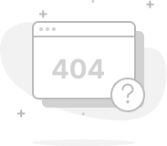
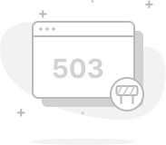

누리지음 CMS 스타일가이드
피그마 「[프로젝트]26-102CMS(누리지음) UIUX 분석」의 「디자인스타일」 페이지(섹션 24개)를 토큰과 컴포넌트 코드로 옮긴 페이지입니다. 규칙 전체는 NURIJIEUM-DESIGN-RULES.md에 있습니다.
- 모든 견본은 그림이 아니라 키트 CSS로 실제로 그린 화면입니다. 각 견본 아래 「코드」를 펼치면 마크업을 볼 수 있습니다.
- 토큰:
static/shared/nuri-tokens.css(피그마 변수 =--nuri-*) · 컴포넌트:static/shared/nuri-components.css(피그마cms/이름=.nuri-이름) · 패턴:static/shared/nuri-patterns.css(pattern/이름=.nuri-p-이름) · 아이콘:static/shared/icons - 섹션 순서는 우선순위입니다 — 기초 → 화면 틀 → 자주 쓰는 컴포넌트(키트 화면에서 많이 쓰는 순) → 상황별 컴포넌트 → 예비. 섹션마다 피그마 디자인스타일의 원래 번호를 함께 적었습니다.
- 오른쪽 위 「고대비 보기」로 high-contrast 모드를 확인할 수 있습니다.
- 서체 Pretendard · 굵기 Regular 400 · SemiBold 600 · Bold 700 · 줄 높이 150% · 1rem = 10px
기초
모든 화면이 쓰는 값 — 색 · 글자 · 간격 · 그림자 · 아이콘
1. Primitive 누리지음 primitive
KRDS 규칙의 원본 값 컬렉션 「누리지음 primitive」. 화면 요소에 직접 쓰지 않고 semantic · mode 변수가 참조합니다(선택 목록에서 숨김). ● 누리지음 실사용 색을 고정하고, 빈 단계는 KRDS 팔레트의 밝기 · 채도 곡선을 틀로 계산했습니다. 연한 구간을 촘촘하게 쓰려고 기존 5를 10으로 옮기고 더 연한 5를 새로 넣었으며, 그 뒤 단계는 한 칸씩 밀려 95 · 100까지 이어집니다. gray는 누리지음 화면에서 가장 많이 쓴 푸른 회색을 주 회색으로 삼았고, 이전 중립 회색은 neutral로 남겨 화면을 다시 연결할 때 gray로 옮깁니다. 순수 검정은 alpha/black100으로 씁니다.
- color/light/gray
- color/light/neutral
- color/light/primary
- color/light/secondary
- color/light/point
- color/light/danger
- color/light/warning
- color/light/success
- color/light/information
- color/light/alpha
- number
키트 CSS키트 토큰(nuri-tokens.css)으로 그린 견본입니다.
gray
- 0
- 5
- 10
- 20
- 30
- 40
- 50
- 60
- 70
- 80
- 90
- 95
- 100
primary
- 5
- 10
- 20
- 30
- 40
- 50
- 60
- 70
- 80
- 90
- 95
- 100
secondary
- 5
- 10
- 20
- 30
- 40
- 50
- 60
- 70
- 80
- 90
- 95
- 100
point
- 5
- 10
- 20
- 30
- 40
- 50
- 60
- 70
- 80
- 90
- 95
- 100
danger
- 5
- 10
- 20
- 30
- 40
- 50
- 60
- 70
- 80
- 90
- 95
- 100
warning
- 5
- 10
- 20
- 30
- 40
- 50
- 60
- 70
- 80
- 90
- 95
- 100
success
- 5
- 10
- 20
- 30
- 40
- 50
- 60
- 70
- 80
- 90
- 95
- 100
information
- 5
- 10
- 20
- 30
- 40
- 50
- 60
- 70
- 80
- 90
- 95
- 100
neutral
- 5
- 10
- 20
- 30
- 40
- 50
- 60
- 70
- 80
- 90
- 95
- 100
alpha
- black100
- black75
- black50
- black25
- black10
- black5
- black0
- white100
- white75
- white50
- white25
- white10
- white5
- white0
2. Mode 누리지음 mode
역할별 색 컬렉션 「누리지음 mode」 (light · high-contrast). KRDS mode의 이름 · 그룹(background · surface · border · divider · text · action · element · icon · link · button · input · alpha)을 그대로 따르고, 값은 누리지음 primitive를 참조합니다. 누리지음은 연한 5단계를 추가해 번호가 한 칸 밀려 있어 KRDS 단계 + 한 칸으로 옮겼고(예: KRDS primary/50 → 누리지음 primary/60), 회색 배경 · 테두리 · 글자는 누리지음 화면에서 실제로 쓰는 단계로 맞췄습니다. 각 칸 왼쪽이 light, 오른쪽이 high-contrast입니다. 고대비 원본 값은 KRDS도 light와 같아 light primitive를 그대로 참조합니다.
- background
- surface
- border
- divider
- text
- action
- element
- icon
- link
- button
- input
- alpha
역할별 색 — 왼쪽 light · 오른쪽 high-contrast
CSS 이름 = --nuri- + 피그마 변수 이름(/ → -). 고대비는 html 의 data-krds-mode="high-contrast" 로 바뀝니다
background (5)
whitegray-subtlergray-subtleinversedim
surface (18)
whitewhite-subtlewhite-subtlerwhite-staticinverseinverse-staticgray-subtlergray-subtledisabledprimary-subtlersecondary-subtlerpoint-subtlerdanger-subtlerwarning-subtlersuccess-subtlerinformation-subtlersecondaryprimary-subtlest
border (21)
transparencyinversedisabledgray-lightgraygray-darkgray-darkerprimary-lightprimarysecondary-lightsecondarypoint-lightpointdanger-lightdangerwarning-lightwarningsuccess-lightsuccessinformation-lightinformation
divider (11)
gray-lightgraygray-darkgray-darkerinverseprimary-lightprimarysecondary-lightsecondaryerrorpoint
text (18)
bolderbasicsubtledisableddisabled-onbolder-inversebasic-inversesubtle-inversestaticinverse-staticprimarysecondarypointdangerwarningsuccessinformationplaceholder
action (18)
whiteprimaryprimary-hoverprimary-pressedprimary-selectedprimary-activesecondarysecondary-hoversecondary-pressedsecondary-selectedsecondary-onsecondary-on-hoversecondary-on-pressedsecondary-on-selectedsecondary-activedisabledgray-hovergray-pressed
element (25)
inverseinverse-staticgray-lightergray-lightgraygray-darkdisabled-lightdisabled-darkprimaryprimary-lightprimary-lightersecondarysecondary-lightsecondary-lighterpointpoint-lightpoint-lighterdangerdanger-lighterwarningwarning-lightersuccesssuccess-lighterinformationinformation-lighter
icon (23)
graygray-lightgray-fillinversedisableddisabled-onprimarysecondarypointdangerwarningsuccessinformationinverse-staticgray-staticprimary-staticsecondary-staticpoint-staticdanger-staticwarning-staticsuccess-staticinformation-staticgray-subtle
link (3)
defaulthoverpressed
input (13)
surfaceborderborder-activeborder-errorsurface-disabledborder-disabledborder-hoverborder-lightborder-light-hoversurface-readonlycontrol-oncontrol-on-disabledcontrol-track-off
alpha (15)
base100base75base50base25base10base0inverse100inverse75inverse50inverse25inverse10inverse0shadow1shadow2shadow3
button (79)
primary-solidprimary-solid-hoverprimary-solid-pressedprimary-lightprimary-light-hoverprimary-light-pressedprimary-borderprimary-border-lightprimary-textsecondary-solidsecondary-solid-hoversecondary-solid-pressedsecondary-lightsecondary-light-hoversecondary-light-pressedsecondary-bordersecondary-border-lightsecondary-texttertiary-solidtertiary-solid-hovertertiary-solid-pressedtertiary-lighttertiary-light-hovertertiary-light-pressedtertiary-bordertertiary-border-lighttertiary-textpoint-solidpoint-solid-hoverpoint-solid-pressedpoint-lightpoint-light-hoverpoint-light-pressedpoint-borderpoint-border-lightpoint-textdanger-soliddanger-solid-hoverdanger-solid-presseddanger-lightdanger-light-hoverdanger-light-presseddanger-borderdanger-border-lightdanger-textwarning-solidwarning-solid-hoverwarning-solid-pressedwarning-lightwarning-light-hoverwarning-light-pressedwarning-borderwarning-border-lightwarning-textsuccess-solidsuccess-solid-hoversuccess-solid-pressedsuccess-lightsuccess-light-hoversuccess-light-pressedsuccess-bordersuccess-border-lightsuccess-textinfo-solidinfo-solid-hoverinfo-solid-pressedinfo-lightinfo-light-hoverinfo-light-pressedinfo-borderinfo-border-lightinfo-textoutline-surfacetext-on-soliddisabled-filldisabled-borderdisabled-textghost-surfacewarning-text-on-solid
tab (5)
line-indicatorbox-selectedbox-surfacebox-hoverbox-border
table (9)
head-surfacedividerrow-hoverrow-selectedrow-changedrow-errorcard-bordercard-border-hovercard-border-selected
nav (7)
texttext-selecteditem-hoveritem-selectedborderbranditem-active-border
pagination (1)
selected
tag (6)
surfacesurface-hovericonborderborder-hoverborder-disabled
segmented (3)
surfaceitem-hoveritem-selected
accordion (2)
surface-opensurface-hover
tree (4)
root-surfaceitem-hoveritem-selectedconnector
data-table (2)
label-surfaceborder-top
toast (8)
surfacetextlinkicon-closeicon-successicon-dangericon-warningicon-info
header (3)
avatar-surfaceavatar-iconnotice-dot
코드
color: var(--nuri-color-text-basic);
background: var(--nuri-color-surface-white);
border-color: var(--nuri-color-border-gray-light);3. Typography 글자 스타일
글자 크기 컬렉션 「누리지음 responsive」(pc · mobile)와 KRDS 이름의 글자 스타일 23개. 실제 화면에서 쓰는 스타일만 남겼고, 크기는 13 · 14 · 16 · 18 · 20 · 24 · 28 · 32(대시보드 숫자), 12는 caption(바닥글 저작권 · 알림 카운트 · 로고 배지)에만 씁니다. 굵기는 세 단계로 역할을 나눕니다 — Regular: 내용(본문 · 표 데이터 · 입력값), SemiBold(-bold): 이름표 · 버튼 · 탭 · 강조 · 선택된 메뉴, Bold: 16px 이상 제목 전용. Medium은 쓰지 않습니다. 줄 높이는 KRDS처럼 모든 스타일 150%로 통일해, 한 줄 높이가 13→20 · 14→21 · 16→24 · 18→27 · 20→30 · 24→36 · 28→42 · 32→48px로 정해집니다. body는 여러 줄 글, label은 버튼 · 입력창 같은 한 줄 요소입니다. 서체 · 굵기 · 크기 · 자간은 모두 변수에 연결되어 있습니다. 디자인 서체 — 화면 제목 · 대시보드 인사말은 KIMM_Bold(brand/page-title 24 · brand/greeting 32), 로고 옆 「CMS」 배지는 Montserrat Bold 15(brand/logo-badge).
- display/small
- heading/xlarge
- heading/large
- heading/medium
- heading/small
- heading/xsmall
- body/medium
- body/small
- body/xsmall
- label/medium-bold
- label/small
- label/xsmall
- navigation/depth-medium
- caption/xsmall
- brand/page-title
- brand/greeting
- brand/logo-badge
키트 CSS키트 토큰(nuri-tokens.css)으로 그린 견본입니다.
| 스타일 | 크기 · 굵기 · 줄 높이 | 보기 | 쓰임 |
|---|---|---|---|
display/small | 32 · Bold · 48 | 누리지음 CMS 관리자 화면 Aa 123 | 대시보드 큰 숫자 · 통계 카드 |
heading/xlarge | 28 · Bold · 42 | 누리지음 CMS 관리자 화면 Aa 123 | 화면 큰 제목 · 로그인 · 첫 화면 |
heading/large | 24 · Bold · 36 | 누리지음 CMS 관리자 화면 Aa 123 | 화면 제목 |
heading/medium | 20 · Bold · 30 | 누리지음 CMS 관리자 화면 Aa 123 | 모달 제목 |
heading/small | 18 · Bold · 27 | 누리지음 CMS 관리자 화면 Aa 123 | 확인창 제목 · 카드 제목 |
heading/xsmall | 16 · Bold · 24 | 누리지음 CMS 관리자 화면 Aa 123 | 작은 제목 |
body/medium | 16 · Regular · 24 | 누리지음 CMS 관리자 화면 Aa 123 | 여러 줄 글 |
body/medium-bold | 16 · SemiBold · 24 | 누리지음 CMS 관리자 화면 Aa 123 | 여러 줄 글 강조 |
body/small | 14 · Regular · 21 | 누리지음 CMS 관리자 화면 Aa 123 | 기본 본문 |
body/small-bold | 14 · SemiBold · 21 | 누리지음 CMS 관리자 화면 Aa 123 | 기본 본문 강조 |
body/xsmall | 13 · Regular · 20 | 누리지음 CMS 관리자 화면 Aa 123 | 보조 본문 |
body/xsmall-bold | 13 · SemiBold · 20 | 누리지음 CMS 관리자 화면 Aa 123 | 보조 본문 강조 |
label/medium-bold | 16 · SemiBold · 24 | 누리지음 CMS 관리자 화면 Aa 123 | 한 줄 요소(큰 버튼) |
label/small | 14 · Regular · 21 | 누리지음 CMS 관리자 화면 Aa 123 | 버튼 · 입력창 · 표 |
label/small-bold | 14 · SemiBold · 21 | 누리지음 CMS 관리자 화면 Aa 123 | 버튼 · 이름표 · 표 머리 |
label/xsmall | 13 · Regular · 20 | 누리지음 CMS 관리자 화면 Aa 123 | 배지 · 작은 버튼 · 안내 |
label/xsmall-bold | 13 · SemiBold · 20 | 누리지음 CMS 관리자 화면 Aa 123 | 작은 버튼 강조 |
navigation/depth-medium | 14 · Regular · 21 | 누리지음 CMS 관리자 화면 Aa 123 | 메뉴 기본 |
navigation/depth-medium-bold | 14 · SemiBold · 21 | 누리지음 CMS 관리자 화면 Aa 123 | 선택된 메뉴 |
caption/xsmall | 12 · Regular · 18 | 누리지음 CMS 관리자 화면 Aa 123 | 바닥글 · 알림 카운트 (특수) |
4. Semantic 누리지음 semantic
간격 · 여백 · 높이 · 모서리 값 컬렉션 「누리지음 semantic」. KRDS의 gap · padding · size-height · radius 구조를 따르고, 값은 primitive number를 참조합니다. 단계는 누리지음 화면(디자인 · 추가기능 · 단위기능 · 게시판 스킨 · 스타일표준화)에서 실제로 쓴 값으로 정했고, 괄호 숫자는 화면에서 쓰인 곳 수입니다.
- gap
- padding
- size-height
- radius
- 정리 기준
gap — 요소 사이 간격
--nuri-gap-1 | 2 | |
--nuri-gap-2 | 4 | |
--nuri-gap-3 | 6 | |
--nuri-gap-4 | 8 | |
--nuri-gap-5 | 10 | |
--nuri-gap-6 | 12 | |
--nuri-gap-7 | 16 | |
--nuri-gap-8 | 20 | |
--nuri-gap-9 | 24 | |
--nuri-gap-10 | 28 | |
--nuri-gap-11 | 32 | |
--nuri-gap-12 | 40 | |
--nuri-gap-13 | 48 | |
--nuri-gap-14 | 56 |
코드
gap: var(--nuri-gap-4); /* 8 */padding — 안쪽 여백
--nuri-padding-1 | 2 | |
--nuri-padding-2 | 4 | |
--nuri-padding-3 | 6 | |
--nuri-padding-4 | 8 | |
--nuri-padding-5 | 10 | |
--nuri-padding-6 | 12 | |
--nuri-padding-7 | 16 | |
--nuri-padding-8 | 20 | |
--nuri-padding-9 | 24 | |
--nuri-padding-10 | 28 | |
--nuri-padding-11 | 32 | |
--nuri-padding-12 | 40 | |
--nuri-padding-13 | 48 |
코드
padding: 0 var(--nuri-padding-7); /* 16 */size-height — 컨트롤 높이
--nuri-size-height-1 | 16 | |
--nuri-size-height-2 | 20 | |
--nuri-size-height-3 | 24 | |
--nuri-size-height-4 | 28 | |
--nuri-size-height-5 | 32 | |
--nuri-size-height-6 | 36 | |
--nuri-size-height-7 | 40 | |
--nuri-size-height-8 | 44 | |
--nuri-size-height-9 | 48 | |
--nuri-size-height-10 | 56 | |
--nuri-size-height-11 | 64 | |
--nuri-size-height-12 | 72 |
코드
height: var(--nuri-size-height-7); /* 40 */radius — 모서리
코드
border-radius: var(--nuri-radius-small); /* 4 */5. Shadow 그림자
그림자 스타일 shadow1 ~ 4 (KRDS 구성). 색은 「누리지음 mode」의 alpha/shadow1~3(light 5 · 8 · 12%, high-contrast 12 · 20 · 40%), shadow3 · 4의 거리 · 흐림은 shadow/y-3 · y-4 · blur-3 · blur-4 변수에 연결되어 고대비 모드에서 자동으로 진해집니다. 누리지음 화면에 흩어져 있던 그림자 25가지를 높이 4단계로 묶었습니다.
- shadow1
- shadow2
- shadow3
- shadow4
키트 CSS키트 토큰(nuri-tokens.css)으로 그린 견본입니다.
--nuri-shadow-1--nuri-shadow-2--nuri-shadow-3--nuri-shadow-4
6. Icon 아이콘
아이콘은 「아이콘」 페이지의 Phosphor 컴포넌트(icon/{이름} 선 · icon/{이름}-fill 채움, 1,512종)를 씁니다. 크기는 12 · 14 · 16 · 20 · 24, 색은 「누리지음 mode」의 icon/* 변수를 씁니다. 버튼 · 배지 안의 아이콘은 버튼 · 배지 글자색을 자동으로 따라갑니다.
- 크기
- 색
- 아이콘 목록 (Regular · Fill 3,024)
그래픽 아이콘 — 피그마 graphic/* 10종 (60×60, PNG)
파일 static/shared/illust/graphic-{이름}.png. 대시보드 · 요약 카드처럼 색이 들어간 큰 아이콘 자리에 씁니다
 graphic/wrench-yellowgraphic/warning-yellowgraphic/save-purple
graphic/wrench-yellowgraphic/warning-yellowgraphic/save-purple graphic/prohibit-purple
graphic/prohibit-purple graphic/text-purple
graphic/text-purple graphic/wrench-purple
graphic/wrench-purple코드
<img class="nuri-graphic" src="../static/shared/illust/graphic-document-blue.png" alt="" width="60" height="60">크기 12 · 14 · 16 · 20 · 24
코드
<span class="nuri-icon i-gear nuri-icon--20 nuri-icon--gray" aria-hidden="true"></span>색 (icon/* 변수)
코드
<span class="nuri-icon i-check-circle-fill nuri-icon--24 nuri-icon--success" aria-hidden="true"></span>아이콘 목록 — 피그마 「아이콘」 페이지 Phosphor 1,512종 × Regular · Fill (3,024개)
피그마 icon/{이름} → class="nuri-icon i-{이름}", icon/{이름}-fill → i-{이름}-fill. 파일은 static/shared/icons, 모양 클래스는 static/shared/nuri-icons.css
코드
<span class="nuri-icon i-trash nuri-icon--16" aria-hidden="true"></span>
<span class="nuri-icon i-trash-fill nuri-icon--20 nuri-icon--danger" aria-hidden="true"></span>
<!-- 버튼 · 배지 안에서는 크기 · 색을 버튼이 정합니다 -->
<button type="button" class="nuri-button nuri-button--danger nuri-button--outline"><span class="nuri-icon i-trash" aria-hidden="true"></span>삭제</button>화면 틀
모든 관리 화면에 들어가는 사이드 메뉴 · 상단 바 · 화면 제목 · 도구 막대 · 바닥글
7. Logo 로고
관리 화면 왼쪽 위 로고. 누리지음 CMS(기본, 130×20)와 기관로고(특수원 CMS, 163×30) 두 가지를 SVG 로 둡니다. 흰 글자라 사이드 메뉴 머리의 진한 파랑 바탕(nav-brand) 위에서만 씁니다. 로고는 추후 다시 정리합니다.
- cms/logo · 임시(누리지음)
- cms/logo · 기관로고
cms/logo — 누리지음 CMS (기본) · 130×20
파일 static/shared/logo/nurijieum-cms.svg (피그마 cms/logo 를 SVG 로 내보냄. 흰 글자라 진한 파랑 바탕 위에서만 씁니다)
코드
<img class="nuri-logo-img" src="../static/shared/logo/nurijieum-cms.svg" alt="누리지음 CMS" width="130" height="20">cms/logo — 기관로고 · 특수원 CMS · 163×30
파일 static/shared/logo/nise-cms.svg (피그마 cms/logo 를 SVG 로 내보냄. 흰 글자라 진한 파랑 바탕 위에서만 씁니다)
코드
<img class="nuri-logo-img nuri-logo-img--nise" src="../static/shared/logo/nise-cms.svg" alt="국립특수교육원 CMS" width="163" height="30">8. Layout 틀
화면 틀 컴포넌트. 확정 디자인(통계표 통합 · 시각화) 기준 — 사이드 메뉴(너비 240, 로고 영역 66 · #0033A9, 1차 메뉴 48(마우스 올림 없음, 선택 시 흰 바탕 (테두리 없음)· 모서리 8, 접힘 › · 펼침 ⌄) · 하위 메뉴 36 · 하이픈 블릿 · 선택 시 연한 파랑 바탕 + SemiBold, 아래 매뉴얼 바로가기), 상단 바(높이 66, 검색 · 사이트 바로가기 · 알림 · 사용자), 화면 제목(24 Bold + 13 설명, 뒤로 · 버튼 영역 선택), 목록 도구 막대(높이 72, 총 개수 · 목록 표시 개수 · 선택 삭제 · 엑셀 · 필터 셀렉트 · 검색), 바닥글(56, 12px 저작권 · 빌드 버전), 맨 위로 버튼(40). 높이 66은 상단 바 · 로고 영역에서 정한 값 그대로입니다. 왼쪽 메뉴 전체 오른쪽에 1px 구분선(nav/border)이 있어 오른쪽 콘텐츠와 나뉩니다. 메뉴 항목에는 테두리를 두지 않습니다.
- cms/side-nav-item
- cms/logo
- cms/side-nav
- cms/header-bar
- cms/page-header
- cms/list-toolbar
- cms/footer
- cms/top-button
- 예시
cms/side-nav · cms/side-nav-item — 너비 240, 1차 48 · 하위 36
코드
<nav class="nuri-side-nav" style="height:56rem"><div class="nuri-side-nav__brand"><img class="nuri-logo-img" src="../static/shared/logo/nurijieum-cms.svg" alt="누리지음 CMS" width="130" height="20"><button type="button" class="nuri-side-nav__fold" aria-label="메뉴 접기"><span class="nuri-icon i-sidebar-simple" aria-hidden="true"></span></button></div><div class="nuri-side-nav__menu"><button class="nuri-nav-item"><span>대시보드</span></button><button class="nuri-nav-item" aria-expanded="true"><span>사이트 관리</span><span class="nuri-icon i-caret-down" aria-hidden="true"></span></button><a class="nuri-nav-item nuri-nav-item--sub" href="#">메뉴 관리</a><a class="nuri-nav-item nuri-nav-item--sub is-hover" href="#">콘텐츠 관리</a><a class="nuri-nav-item nuri-nav-item--sub" href="#" aria-current="page">게시판 관리</a><a class="nuri-nav-item nuri-nav-item--sub" href="#">팝업존 관리</a><button class="nuri-nav-item is-active" aria-expanded="false"><span>운영관리</span><span class="nuri-icon i-caret-right" aria-hidden="true"></span></button><button class="nuri-nav-item" aria-expanded="false"><span>시계열 시각화</span><span class="nuri-icon i-caret-right" aria-hidden="true"></span></button></div><a class="nuri-side-nav__help" href="#"><span class="nuri-icon i-book-open" aria-hidden="true"></span><span><strong>도움이 필요하신가요?</strong>사용자 매뉴얼 바로가기</span></a></nav>cms/header-bar — 높이 66
왼쪽: 사이트 선택(테두리 header/site-border 흰 40% · 높이 40 · 13 SemiBold) + 검색(바탕 header/search-surface 흰 12% · 테두리 없음 · 425×40 · 13 Regular). 원본 디자인 페이지 기준
코드
<header class="nuri-header-bar"><div class="nuri-header-bar__left"><label class="nuri-header-bar__site"><span class="sr-only">작업 사이트</span><select><option>대표행정</option><option>교육 포털</option></select><span class="nuri-icon i-caret-down" aria-hidden="true"></span></label><label class="nuri-header-bar__search"><span class="nuri-icon i-magnifying-glass" aria-hidden="true"></span><input type="search" placeholder="메뉴 및 콘텐츠 검색"></label></div><div class="nuri-header-bar__right"><button class="nuri-header-bar__action">사이트 바로가기<span class="nuri-icon i-globe" aria-hidden="true"></span></button><span class="nuri-header-bar__divider"></span><button class="nuri-header-bar__action">글자·화면 설정<span class="nuri-icon i-monitor" aria-hidden="true"></span></button><span class="nuri-header-bar__divider"></span><button class="nuri-header-bar__action">알림<span class="nuri-header-bar__bell"><span class="nuri-icon i-bell" aria-hidden="true"></span></span></button><div class="nuri-header-bar__user"><span class="nuri-avatar"><span class="nuri-icon i-user" aria-hidden="true"></span></span><span><span class="nuri-header-bar__name">전체관리자</span><span class="nuri-header-bar__ip">106.254.245.218</span></span><span class="nuri-icon i-caret-down" aria-hidden="true"></span></div></div></header>cms/page-header — Default · Form
화면 제목 서체는 KIMM_Bold(brand/page-title). 키트에 글꼴 파일이 없어 Pretendard Bold 로 대신 그립니다
게시판 관리
게시판을 만들고 게시글을 관리합니다.
콘텐츠 수정
코드
<div class="nuri-page-header"><div class="nuri-page-header__title-area"><h1 class="nuri-page-header__title">게시판 관리</h1><p class="nuri-page-header__desc">게시판을 만들고 게시글을 관리합니다.</p></div><div class="nuri-page-header__actions"><button type="button" class="nuri-button nuri-button--outline">게시판 복사</button><button type="button" class="nuri-button"><span class="nuri-icon i-plus" aria-hidden="true"></span>새 게시판 등록</button></div></div><div style="height:2.4rem"></div><div class="nuri-page-header nuri-page-header--form"><div class="nuri-page-header__title-area"><button type="button" class="nuri-button-icon nuri-button--tertiary nuri-button--outline nuri-button--s" aria-label="뒤로"><span class="nuri-icon i-arrow-left" aria-hidden="true"></span></button><h1 class="nuri-page-header__title">콘텐츠 수정</h1></div><div class="nuri-page-header__actions"><span class="nuri-page-header__status">자동 저장됨 · 2분 전</span><button type="button" class="nuri-button nuri-button--danger nuri-button--outline">삭제하기</button><button type="button" class="nuri-button">수정하기</button></div></div>cms/list-toolbar — 높이 72
코드
<div class="nuri-list-toolbar"><div class="nuri-list-toolbar__left"><span class="nuri-list-toolbar__total">총 87개</span><span class="nuri-list-toolbar__group"><span class="nuri-list-toolbar__label">목록 표시 개수</span><button type="button" class="nuri-select-text">15개<span class="nuri-icon i-caret-down" aria-hidden="true"></span></button></span><span class="nuri-list-toolbar__group"><span class="nuri-list-toolbar__count">선택 0개</span><button type="button" class="nuri-button nuri-button--danger nuri-button--outline-fill nuri-button--s"><span class="nuri-icon i-trash" aria-hidden="true"></span>선택 삭제</button><button type="button" class="nuri-button nuri-button--tertiary nuri-button--outline nuri-button--s"><span class="nuri-icon i-download-simple" aria-hidden="true"></span>엑셀 다운로드</button></span></div><div class="nuri-list-toolbar__right"><div class="nuri-select nuri-select--s"><select class="nuri-select__control" required><option value="" disabled hidden>선택하세요</option><option selected>사용</option><option>미사용</option></select><span class="nuri-icon i-caret-down" aria-hidden="true"></span></div><div class="nuri-input nuri-input--s"><span class="nuri-icon i-magnifying-glass" aria-hidden="true"></span><input class="nuri-input__control" type="text" placeholder="검색어를 입력하세요"><button type="button" class="nuri-input__clear" aria-label="지우기"><span class="nuri-icon i-x-circle-fill nuri-icon--16" aria-hidden="true"></span></button></div></div></div>cms/footer · cms/top-button
코드
<footer class="nuri-footer"><span>© 2026 누리지음CMS Core. All rights reserved.</span><span>Build Version: 2.4.11-STABLE</span></footer><div class="sg-row" style="margin-top:1.6rem"><button type="button" class="nuri-top-button" aria-label="맨 위로"><span class="nuri-icon i-arrow-up" aria-hidden="true"></span></button></div>자주 쓰는 컴포넌트
관리 화면 대부분에 나오는 요소 (키트 화면에서 많이 쓰는 순)
9. Button 버튼
버튼 컴포넌트. Color 8개(Primary · Secondary · Tertiary · Point · Danger · Warning · Success · Info) × Style(Solid · Solid-light · Outline · Outline-fill, 아이콘 버튼은 + Ghost) × Size(XS 28 · S 32 · M 40 · L 44 · XL 48, 아이콘 버튼 XS · S · M) × State(Default · Hover · Pressed · Disabled). 글자 · 앞 아이콘 · 뒤 아이콘을 켜고 바꿀 수 있고, 색 · 높이 · 여백 · 모서리 · 글자는 모두 변수와 스타일에 연결되어 있습니다.
- cms/button
- cms/button-icon
- cms/button-text
Color × Style × State — 크기를 바꿔 보세요
class="nuri-button nuri-button--{색} nuri-button--{스타일}" — 색을 빼면 Primary, 스타일을 빼면 Solid
| Solid | Solid-light | Outline | Outline-fill | Solid 마우스 올림 | Solid 누름 | Solid 비활성 | Outline 비활성 | |
|---|---|---|---|---|---|---|---|---|
| Primary | ||||||||
| Secondary | ||||||||
| Tertiary | ||||||||
| Point | ||||||||
| Danger | ||||||||
| Warning | ||||||||
| Success | ||||||||
| Info |
코드
<button type="button" class="nuri-button">단추</button>
<button type="button" class="nuri-button nuri-button--danger nuri-button--outline">단추</button>
<button type="button" class="nuri-button nuri-button--tertiary nuri-button--outline-fill">단추</button>Size — XS 28 · S 32 · M 40 · L 44 · XL 48
크기 클래스: nuri-button--xs · --s · (M 은 없음) · --l · --xl. 글자 XS · S 13 · M 14 · L · XL 16, 좌우 여백 8 · 12 · 16 · 16 · 20, 아이콘 14 · 16 · 16 · 20 · 20
| 크기 | Solid | 앞 아이콘 | 뒤 아이콘 | Solid-light | Outline-fill |
|---|---|---|---|---|---|
| XS 28 | |||||
| S 32 | |||||
| M 40 | |||||
| L 44 | |||||
| XL 48 |
코드
<!-- XS 28 -->
<button type="button" class="nuri-button nuri-button--xs"><span class="nuri-icon i-plus" aria-hidden="true"></span>등록</button>
<!-- S 32 -->
<button type="button" class="nuri-button nuri-button--s"><span class="nuri-icon i-plus" aria-hidden="true"></span>등록</button>
<!-- M 40 -->
<button type="button" class="nuri-button"><span class="nuri-icon i-plus" aria-hidden="true"></span>등록</button>
<!-- L 44 -->
<button type="button" class="nuri-button nuri-button--l"><span class="nuri-icon i-plus" aria-hidden="true"></span>등록</button>
<!-- XL 48 -->
<button type="button" class="nuri-button nuri-button--xl"><span class="nuri-icon i-plus" aria-hidden="true"></span>등록</button>State (Default · Hover · Pressed · Disabled)
마우스 올림 · 누름은 실제 상태(:hover · :active)로 그립니다. 견본은 .is-hover · .is-pressed
코드
<button type="button" class="nuri-button" disabled>비활성</button>아이콘 켜기 (앞 · 뒤)
코드
<div class="sg-row"><button type="button" class="nuri-button"><span class="nuri-icon i-plus" aria-hidden="true"></span>등록</button><button type="button" class="nuri-button nuri-button--tertiary nuri-button--outline"><span class="nuri-icon i-download-simple" aria-hidden="true"></span>엑셀 다운로드</button><button type="button" class="nuri-button nuri-button--tertiary nuri-button--outline">더보기<span class="nuri-icon i-caret-down" aria-hidden="true"></span></button><button type="button" class="nuri-button nuri-button--outline-fill"><span class="nuri-icon i-arrow-left" aria-hidden="true"></span>이동<span class="nuri-icon i-caret-right" aria-hidden="true"></span></button></div>cms/button-icon — Color × Style × State (Ghost 스타일 추가) — 크기를 바꿔 보세요
| Solid | Solid-light | Outline | Outline-fill | Ghost | Outline 마우스 올림 | Outline 누름 | Outline 비활성 | |
|---|---|---|---|---|---|---|---|---|
| Primary | ||||||||
| Secondary | ||||||||
| Tertiary | ||||||||
| Point | ||||||||
| Danger | ||||||||
| Warning | ||||||||
| Success | ||||||||
| Info |
코드
<button type="button" class="nuri-button-icon nuri-button--tertiary nuri-button--ghost" aria-label="더보기"><span class="nuri-icon i-dots-three-vertical" aria-hidden="true"></span></button>
<button type="button" class="nuri-button-icon nuri-button--tertiary nuri-button--outline" aria-label="더보기"><span class="nuri-icon i-dots-three-vertical" aria-hidden="true"></span></button>cms/button-icon — Size XS 28 · S 32 · M 40 (아이콘 14 · 16 · 20)
| 크기 | Primary Solid | Tertiary Outline | Tertiary Outline-fill | Tertiary Ghost |
|---|---|---|---|---|
| XS 28 | ||||
| S 32 | ||||
| M 40 |
코드
<!-- XS 28 -->
<button type="button" class="nuri-button-icon nuri-button--tertiary nuri-button--outline nuri-button--xs" aria-label="더보기"><span class="nuri-icon i-dots-three-vertical" aria-hidden="true"></span></button>
<!-- S 32 -->
<button type="button" class="nuri-button-icon nuri-button--tertiary nuri-button--outline nuri-button--s" aria-label="더보기"><span class="nuri-icon i-dots-three-vertical" aria-hidden="true"></span></button>
<!-- M 40 -->
<button type="button" class="nuri-button-icon nuri-button--tertiary nuri-button--outline" aria-label="더보기"><span class="nuri-icon i-dots-three-vertical" aria-hidden="true"></span></button>cms/button-text — Link · Neutral · Danger, S 24 · M 28
코드
<div class="sg-row"><button type="button" class="nuri-button-text">상세 검색</button><button type="button" class="nuri-button-text nuri-button-text--neutral">초기화</button><button type="button" class="nuri-button-text nuri-button-text--danger">삭제</button><button type="button" class="nuri-button-text nuri-button-text--s">상세 검색</button><button type="button" class="nuri-button-text nuri-button-text--neutral nuri-button-text--s">초기화</button><button type="button" class="nuri-button-text nuri-button-text--danger nuri-button-text--s">삭제</button></div>10. Input 입력 요소
입력 요소(KRDS 구조). 텍스트 입력(cms/input) · 셀렉트 박스(cms/select)는 같은 상태: 기본(안내 글자) · 입력 중(파랑 2px, 입력은 지우기 X · 셀렉트는 펼침) · 입력 완료 · 오류(빨강 2px) · 비활성 · 보기 전용. 값 있음/없음을 따로 나누지 않고, 라벨 · 안내 문구는 켜고 끕니다(라벨-상자-안내 사이 8). 상자 높이 S 32 · M 40 · L 44 · 모서리 4 · 여백 12/16 · 글자 14(L 16). 입력은 진한 테두리(input/border), 셀렉트는 연한 테두리(input/border-light). 글자형 셀렉트(cms/select-text)는 테두리 없이 기본 · 마우스 올림 · 누름 · 비활성. 라디오는 진한 테두리 1 · 켜짐은 파랑 테두리 + 가운데 점, 체크박스 · 라디오 S 16 · M 20, 토글 S 20 · M 24.
- cms/input
- cms/select
- cms/select-text
- cms/checkbox
- cms/radio
- cms/toggle
cms/input — 상태
상자 높이 S 32 · M 40 · L 44, 모서리 4, 여백 12/16. 실제로 누르면 입력 중(파랑 2px) 상태가 됩니다
기본(안내 글자)
입력 중
입력 완료
오류
비활성
보기 전용
코드
<div class="nuri-input"><input class="nuri-input__control" type="text" placeholder="내용을 입력하세요"><button type="button" class="nuri-input__clear" aria-label="지우기"><span class="nuri-icon i-x-circle-fill nuri-icon--16" aria-hidden="true"></span></button></div>
<div class="nuri-input is-error"><input class="nuri-input__control" type="text" placeholder="내용을 입력하세요" value="누리지음"><button type="button" class="nuri-input__clear" aria-label="지우기"><span class="nuri-icon i-x-circle-fill nuri-icon--16" aria-hidden="true"></span></button></div>cms/input — Size S 32 · M 40 · L 44
크기 클래스: nuri-input--s · (M 은 없음) · nuri-input--l. 좌우 여백 12 · 16 · 16, 글자 14 · 14 · 16, 아이콘 16 · 20 · 20
| 크기 | 기본 | 입력 완료 | 앞 아이콘 | 오류 |
|---|---|---|---|---|
| S 32 | ||||
| M 40 | ||||
| L 44 |
코드
<!-- S 32 -->
<div class="nuri-input nuri-input--s"><span class="nuri-icon i-magnifying-glass" aria-hidden="true"></span><input class="nuri-input__control" type="text" placeholder="검색어를 입력하세요"><button type="button" class="nuri-input__clear" aria-label="지우기"><span class="nuri-icon i-x-circle-fill nuri-icon--16" aria-hidden="true"></span></button></div>
<!-- M 40 -->
<div class="nuri-input"><span class="nuri-icon i-magnifying-glass" aria-hidden="true"></span><input class="nuri-input__control" type="text" placeholder="검색어를 입력하세요"><button type="button" class="nuri-input__clear" aria-label="지우기"><span class="nuri-icon i-x-circle-fill nuri-icon--16" aria-hidden="true"></span></button></div>
<!-- L 44 -->
<div class="nuri-input nuri-input--l"><span class="nuri-icon i-magnifying-glass" aria-hidden="true"></span><input class="nuri-input__control" type="text" placeholder="검색어를 입력하세요"><button type="button" class="nuri-input__clear" aria-label="지우기"><span class="nuri-icon i-x-circle-fill nuri-icon--16" aria-hidden="true"></span></button></div>라벨 · 안내 · 오류 켜기 (사이 8)
한글 20자까지 쓸 수 있습니다.
이메일 형식이 맞지 않습니다.
코드
<div class="nuri-field"><label class="nuri-label">이름<span class="nuri-label__required" aria-hidden="true">*</span></label><div class="nuri-input"><input class="nuri-input__control" type="text" placeholder="내용을 입력하세요"><button type="button" class="nuri-input__clear" aria-label="지우기"><span class="nuri-icon i-x-circle-fill nuri-icon--16" aria-hidden="true"></span></button></div><p class="nuri-help">한글 20자까지 쓸 수 있습니다.</p></div>cms/select — 연한 테두리(input/border-light)
기본
입력 완료
오류
비활성
보기 전용
S
코드
<div class="nuri-select"><select class="nuri-select__control" required><option value="" disabled selected hidden>선택하세요</option><option>사용</option><option>미사용</option></select><span class="nuri-icon i-caret-down" aria-hidden="true"></span></div>cms/select — Size S 32 · M 40 · L 44
크기 클래스: nuri-select--s · (M 은 없음) · nuri-select--l. 펼침 꺾쇠는 크기와 관계없이 16
| 크기 | 기본 | 입력 완료 | 오류 | 비활성 |
|---|---|---|---|---|
| S 32 | ||||
| M 40 | ||||
| L 44 |
코드
<!-- S 32 -->
<div class="nuri-select nuri-select--s"><select class="nuri-select__control" required><option value="" disabled hidden>선택하세요</option><option selected>사용</option><option>미사용</option></select><span class="nuri-icon i-caret-down" aria-hidden="true"></span></div>
<!-- M 40 -->
<div class="nuri-select"><select class="nuri-select__control" required><option value="" disabled hidden>선택하세요</option><option selected>사용</option><option>미사용</option></select><span class="nuri-icon i-caret-down" aria-hidden="true"></span></div>
<!-- L 44 -->
<div class="nuri-select nuri-select--l"><select class="nuri-select__control" required><option value="" disabled hidden>선택하세요</option><option selected>사용</option><option>미사용</option></select><span class="nuri-icon i-caret-down" aria-hidden="true"></span></div>cms/select-text — Size S · M 14 · L 16
S · M 은 같은 모양(글자 14 · 꺾쇠 16), L 만 nuri-select-text--l (글자 16)
| 크기 | 기본 | 마우스 올림 | 비활성 |
|---|---|---|---|
| S · M (14) | |||
| L (16) |
코드
<button type="button" class="nuri-select-text">15개<span class="nuri-icon i-caret-down" aria-hidden="true"></span></button>
<button type="button" class="nuri-select-text nuri-select-text--l">15개<span class="nuri-icon i-caret-down" aria-hidden="true"></span></button>체크박스 · 라디오 · 토글 — S 16/20 · M 20/24
크기 클래스: nuri-check--m · nuri-radio--m · nuri-toggle--m (S 는 없음). 상자 S 16 · M 20, 토글 36×20 · 44×24, 라벨 14 · 16
| 꺼짐 | 켜짐 | 비활성 | 켜짐 비활성 | M | |
|---|---|---|---|---|---|
| 체크박스 | |||||
| 라디오 | |||||
| 토글 |
코드
<!-- 체크박스 S · M -->
<label class="nuri-check"><input type="checkbox" checked><span>라벨</span></label>
<label class="nuri-check nuri-check--m"><input type="checkbox" checked><span>라벨</span></label>
<!-- 라디오 S · M -->
<label class="nuri-radio"><input type="radio" checked><span>라벨</span></label>
<label class="nuri-radio nuri-radio--m"><input type="radio" checked><span>라벨</span></label>
<!-- 토글 S · M -->
<label class="nuri-toggle"><input type="checkbox" role="switch" checked><span>라벨</span></label>
<label class="nuri-toggle nuri-toggle--m"><input type="checkbox" role="switch" checked><span>라벨</span></label>11. Form field 입력 항목
입력 항목. 라벨(cms/label): 14 SemiBold, 필수 *는 빨강(사이 2), 도움말(?) 켜기. 위아래형은 입력(cms/input)의 「라벨」 · 「안내」를 켜서 씁니다(KRDS 텍스트 입력과 같은 구조). 좌우형(cms/form-field): 라벨 칸 120 · 사이 24, 입력은 cms/input이며 셀렉트 · 날짜 · 텍스트 영역으로 바꿔 끼웁니다. 텍스트 영역(cms/textarea): 입력창과 같은 색 · 상태, 기본 높이 120 · 여백 12/16 · 글자 수(13) 켜기.
- cms/label
- cms/form-field
- cms/textarea
cms/label — 14 SemiBold, 필수 * 빨강 · 도움말
코드
<span class="nuri-label">라벨<span class="nuri-label__required" aria-hidden="true">*</span><span class="nuri-label__help nuri-icon i-question" title="도움말"></span></span>cms/form-field — 좌우형 (라벨 칸 120 · 사이 16), 안내 · 오류
한글 20자까지 쓸 수 있습니다.
이미 있는 이름입니다.
코드
<div class="nuri-form-row"><label class="nuri-label">게시판 이름<span class="nuri-label__required" aria-hidden="true">*</span></label><div class="nuri-field"><div class="nuri-input nuri-input--l"><input class="nuri-input__control" type="text" placeholder="내용을 입력하세요"><button type="button" class="nuri-input__clear" aria-label="지우기"><span class="nuri-icon i-x-circle-fill nuri-icon--16" aria-hidden="true"></span></button></div></div></div>cms/textarea — 기본 높이 120 · 여백 12/16 · 글자 수
기본
입력 중
오류
보기 전용
비활성
코드
<div class="nuri-textarea"><textarea placeholder="내용을 입력하세요" aria-label="내용"></textarea><span class="nuri-textarea__count">0 / 500</span></div>12. Select list 선택 목록
셀렉트를 펼쳤을 때 나오는 선택 목록. 항목(cms/select-option): 하나 고르기 · 여러 개 고르기 × 기본 · 마우스 올림 · 선택 · 비활성, 높이 36 · 좌우 여백 12 · 모서리 4 · 글자 14, 보조 글자 13(선택). 하나 고르기의 선택은 파랑 SemiBold + 오른쪽 체크, 여러 개 고르기는 앞 체크박스. 목록(cms/select-list): 여백 8 · 모서리 8 · 테두리 1 · shadow2로 더보기 메뉴(cms/menu)와 같은 겉모양, 항목이 많으면 검색 입력창을 켭니다. 셀렉트 아래 4 떨어뜨려 셀렉트와 같은 너비로 놓습니다.
- cms/select-option
- cms/select-list
- 예시 · 펼친 셀렉트
cms/select-option · cms/select-list — 하나 고르기
항목 높이 36 · 좌우 12 · 모서리 4. 셀렉트 아래 4 떨어뜨려 같은 너비로
코드
<div class="nuri-listbox" role="listbox"><div class="nuri-option" role="option"><span>전체</span></div><div class="nuri-option" role="option" aria-selected="true"><span>사용</span><span class="nuri-icon nuri-option__check i-check" aria-hidden="true"></span></div><div class="nuri-option is-hover" role="option"><span>미사용</span></div><div class="nuri-option" role="option" aria-disabled="true"><span>삭제됨</span></div><div class="nuri-option" role="option"><span>보조 글자 있음<span class="nuri-option__sub">관리자만 볼 수 있습니다</span></span></div></div>13. Modal · Panel 모달 · 패널
창 컴포넌트. 모달(cms/modal)은 크기별 하나의 컴포넌트입니다: S 400 · M 560 · L 760, 확인창(Confirm)은 S. 머리(제목 20 Bold, 확인창 18 · 설명 13 · 닫기)와 꼬리(버튼 M 40, 오른쪽 정렬)는 모달 안의 오토레이아웃이며, 버튼은 cms/button 인스턴스라 색 · 스타일을 바로 바꿉니다. 속성: 제목 · 설명 · 설명 글자 · 닫기 · 보조 버튼. 모서리 12 · shadow4 · 여백 24. 패널(cms/panel): 오른쪽에서 열리는 슬라이드 패널, 너비 480 · 높이 1080 · shadow4, 모달과 같은 속성.
- cms/modal
- cms/panel
cms/modal — Size S 400 · M 560 · L 760
크기 클래스: nuri-modal--s · (M 은 없음) · nuri-modal--l. 뒤 배경은 .nuri-dim (background/dim)
모달 S 400
담당자를 찾아 선택하세요.
총 1,587명
모달 M 560
담당자를 찾아 선택하세요.
총 1,587명
모달 L 760
담당자를 찾아 선택하세요.
총 1,587명
코드
<!-- S 400 -->
<div class="nuri-modal nuri-modal--s" role="dialog" aria-labelledby="m1s"><div class="nuri-modal__head"><div><h2 class="nuri-modal__title" id="m1s">모달 S 400</h2><p class="nuri-modal__desc">담당자를 찾아 선택하세요.</p></div><button type="button" class="nuri-button-icon nuri-button--tertiary nuri-button--ghost nuri-button--s" aria-label="닫기"><span class="nuri-icon i-x" aria-hidden="true"></span></button></div><div class="nuri-modal__body"><div class="nuri-input"><span class="nuri-icon i-magnifying-glass" aria-hidden="true"></span><input class="nuri-input__control" type="text" placeholder="이름 또는 부서를 입력하세요"><button type="button" class="nuri-input__clear" aria-label="지우기"><span class="nuri-icon i-x-circle-fill nuri-icon--16" aria-hidden="true"></span></button></div><p>총 1,587명</p></div><div class="nuri-modal__foot"><button type="button" class="nuri-button nuri-button--tertiary nuri-button--outline">취소</button><button type="button" class="nuri-button">선택</button></div></div>
<!-- M 560 -->
<div class="nuri-modal" role="dialog" aria-labelledby="m1"><div class="nuri-modal__head"><div><h2 class="nuri-modal__title" id="m1">모달 M 560</h2><p class="nuri-modal__desc">담당자를 찾아 선택하세요.</p></div><button type="button" class="nuri-button-icon nuri-button--tertiary nuri-button--ghost nuri-button--s" aria-label="닫기"><span class="nuri-icon i-x" aria-hidden="true"></span></button></div><div class="nuri-modal__body"><div class="nuri-input"><span class="nuri-icon i-magnifying-glass" aria-hidden="true"></span><input class="nuri-input__control" type="text" placeholder="이름 또는 부서를 입력하세요"><button type="button" class="nuri-input__clear" aria-label="지우기"><span class="nuri-icon i-x-circle-fill nuri-icon--16" aria-hidden="true"></span></button></div><p>총 1,587명</p></div><div class="nuri-modal__foot"><button type="button" class="nuri-button nuri-button--tertiary nuri-button--outline">취소</button><button type="button" class="nuri-button">선택</button></div></div>
<!-- L 760 -->
<div class="nuri-modal nuri-modal--l" role="dialog" aria-labelledby="m1l"><div class="nuri-modal__head"><div><h2 class="nuri-modal__title" id="m1l">모달 L 760</h2><p class="nuri-modal__desc">담당자를 찾아 선택하세요.</p></div><button type="button" class="nuri-button-icon nuri-button--tertiary nuri-button--ghost nuri-button--s" aria-label="닫기"><span class="nuri-icon i-x" aria-hidden="true"></span></button></div><div class="nuri-modal__body"><div class="nuri-input"><span class="nuri-icon i-magnifying-glass" aria-hidden="true"></span><input class="nuri-input__control" type="text" placeholder="이름 또는 부서를 입력하세요"><button type="button" class="nuri-input__clear" aria-label="지우기"><span class="nuri-icon i-x-circle-fill nuri-icon--16" aria-hidden="true"></span></button></div><p>총 1,587명</p></div><div class="nuri-modal__foot"><button type="button" class="nuri-button nuri-button--tertiary nuri-button--outline">취소</button><button type="button" class="nuri-button">선택</button></div></div>cms/modal — Confirm (S)
게시글 삭제
선택한 게시글을 삭제할까요? 삭제한 글은 되돌릴 수 없습니다.
코드
<div class="nuri-modal nuri-modal--s nuri-modal--confirm" role="alertdialog" aria-labelledby="m2"><div class="nuri-modal__head"><div><h2 class="nuri-modal__title" id="m2">게시글 삭제</h2></div><button type="button" class="nuri-button-icon nuri-button--tertiary nuri-button--ghost nuri-button--s" aria-label="닫기"><span class="nuri-icon i-x" aria-hidden="true"></span></button></div><div class="nuri-modal__body"><p>선택한 게시글을 삭제할까요? 삭제한 글은 되돌릴 수 없습니다.</p></div><div class="nuri-modal__foot"><button type="button" class="nuri-button nuri-button--tertiary nuri-button--outline">취소</button><button type="button" class="nuri-button nuri-button--danger">삭제</button></div></div>cms/panel — 오른쪽 슬라이드 패널(너비 476)
코드
<aside class="nuri-panel" aria-labelledby="p1"><div class="nuri-panel__head"><h2 class="nuri-panel__title" id="p1">게시판 등록</h2><button type="button" class="nuri-panel__close" aria-label="닫기"><span class="nuri-icon i-x" aria-hidden="true"></span></button></div><div class="nuri-panel__body"><div class="nuri-card"><div class="nuri-field"><label class="nuri-label">게시판 이름<span class="nuri-label__required">*</span></label><div class="nuri-input"><input class="nuri-input__control" type="text" placeholder="내용을 입력하세요"><button type="button" class="nuri-input__clear" aria-label="지우기"><span class="nuri-icon i-x-circle-fill nuri-icon--16" aria-hidden="true"></span></button></div></div></div></div><div class="nuri-panel__foot"><button type="button" class="nuri-button nuri-button--tertiary nuri-button--outline nuri-button--xl">취소</button><button type="button" class="nuri-button nuri-button--xl">등록</button></div></aside>14. Tab · Menu 탭 · 메뉴
탭: 밑줄 탭(Line, 높이 48, 선택 시 2px 밑줄 · 14 SemiBold 파랑)과 상자 탭(Box, 높이 44, 선택 시 진한 파랑 바탕 · 흰 글자, 모서리 8). 메뉴: 더보기 · 작업 · 프로필 메뉴에 쓰는 cms/menu(흰 바탕 · 연한 테두리 · shadow2, 모서리 8, 여백 8)와 항목 cms/menu-item(높이 36, 14 Regular, 아이콘 16, 마우스 올림 gray/10, 삭제 같은 위험 항목은 Danger). 확정 디자인의 작업 메뉴(15px · 아이콘 24)는 14px · 16px로 맞춥니다.
- cms/tab
- cms/menu-item
- cms/menu
cms/tab — Line (높이 48)
선택: aria-selected="true"
코드
<div class="nuri-tabs" role="tablist"><button class="nuri-tab" role="tab" aria-selected="true">메뉴</button><button class="nuri-tab" role="tab" aria-selected="false">메뉴 라우트</button><button class="nuri-tab is-hover" role="tab" aria-selected="false">마우스 올림</button><button class="nuri-tab" role="tab" aria-selected="false" disabled>비활성</button></div>cms/tab — Box (높이 44)
코드
<div class="nuri-tabs nuri-tabs--box" role="tablist"><button class="nuri-tab nuri-tab--box" role="tab" aria-selected="true">권한 그룹 명단</button><button class="nuri-tab nuri-tab--box" role="tab" aria-selected="false">역할 관리</button><button class="nuri-tab nuri-tab--box is-hover" role="tab" aria-selected="false">서브관리자 계정</button><button class="nuri-tab nuri-tab--box" role="tab" aria-selected="false" disabled>접속 IP 관리</button></div>cms/menu · cms/menu-item — 더보기 · 작업 메뉴
코드
<div class="nuri-menu" role="menu"><button class="nuri-menu__item" role="menuitem"><span class="nuri-icon i-eye" aria-hidden="true"></span>미리보기</button><button class="nuri-menu__item is-hover" role="menuitem"><span class="nuri-icon i-pencil-simple" aria-hidden="true"></span>수정하기</button><button class="nuri-menu__item" role="menuitem" disabled><span class="nuri-icon i-copy" aria-hidden="true"></span>복사하기</button><button class="nuri-menu__item nuri-menu__item--danger" role="menuitem"><span class="nuri-icon i-trash" aria-hidden="true"></span>삭제하기</button></div>15. Table 표
표 컴포넌트. 확정 디자인(통계표 통합 · 시각화) 목록 표 기준. cms/table-cell — Type 머리 · 내용 × Content(글자 · 진한 글자 · 연한 글자 · 링크 · 두 줄 · 배지 · 체크박스 · 버튼 · 작업) × Align, 높이 48 · 좌우 여백 8, 글자 14(머리 SemiBold · 내용 Regular). 안쪽 배지 · 체크박스 · 버튼은 칸에서 바로 바꿀 수 있습니다. cms/table-row — 칸을 이어 붙인 행. Style 두 가지: 줄형(Line, 확정 디자인 · 아래 구분선, 기본 · 마우스 올림 · 선택 · 바뀜 · 오류)과 카드형(Card, 게시글 리스트 · 행마다 모서리 8 · 테두리 1px · 행 사이 8, 머리 13 SemiBold, 기본 · 마우스 올림 · 선택(파랑 테두리 + 제목 파랑 SemiBold), 작업은 테두리 없는 ⋮).
- cms/table-cell
- cms/table-row
- 예시 · 카드형
cms/table-row Line — 기본 · 마우스 올림 · 선택 · 바뀜 · 오류
칸 높이 48 · 좌우 8 · 글자 14(머리 SemiBold). 행 상태는 tr 에 is-selected · is-changed · is-error
| 번호 | 제목 | 상태 | 링크 | 등록일 | 작업 | |
|---|---|---|---|---|---|---|
| 24 | 2026년 특수교육 실태조사 안내공지사항 · 전체관리자 | 게시중 | 자세히 보기 | 2026-11-20 | ||
| 23 | 마우스 올림 행row-hover | 승인대기 | 자세히 보기 | 2026-11-19 | ||
| 22 | 선택 행row-selected | 임시저장 | 자세히 보기 | 2026-11-18 | ||
| 21 | 바뀐 행row-changed | 배지 | 자세히 보기 | 2026-11-17 | ||
| 20 | 오류 행row-error | 반려 | 자세히 보기 | 2026-11-16 |
코드
<table class="nuri-table">
<thead><tr><th class="is-check"><label class="nuri-check"><input type="checkbox"><span class="sr-only">선택</span></label></th><th style="width:6.4rem">번호</th><th>제목</th><th class="is-center" style="width:9.6rem">상태</th><th style="width:12rem">링크</th><th style="width:12rem">등록일</th><th class="is-center" style="width:6.4rem">작업</th></tr></thead>
<tbody><tr class=""><td class="is-check"><label class="nuri-check"><input type="checkbox"><span class="sr-only">선택</span></label></td><td class="nuri-cell--subtle">24</td><td><span class="nuri-cell__main">제목</span><span class="nuri-cell__sub">보조 정보</span></td><td class="is-center"><span class="nuri-badge nuri-badge--success">게시중</span></td><td><a class="nuri-cell__link" href="#">자세히 보기</a></td><td class="nuri-cell--subtle">2026-11-20</td><td class="is-center"><button type="button" class="nuri-button-icon nuri-button--tertiary nuri-button--outline nuri-button--s" aria-label="작업"><span class="nuri-icon i-dots-three-vertical" aria-hidden="true"></span></button></td></tr></tbody>
</table>칸 내용 — 아이콘+글자(Icon-text)
| 통계표 통합을 먼저 실행해주세요. | |
| 미설정 |
코드
<table class="nuri-table"><tbody><tr><td class="is-check"><label class="nuri-check"><input type="checkbox"><span class="sr-only">선택</span></label></td><td>통계표 통합을 먼저 실행해주세요.</td></tr><tr><td></td><td><span class="nuri-cell__icon-text"><span class="nuri-icon i-warning-circle" aria-hidden="true"></span>미설정</span></td></tr></tbody></table>cms/table-row Card — 게시글 리스트
행마다 모서리 8 · 테두리 1 · 행 사이 8
| 번호 | 제목 | 작성자 | 작업 |
|---|---|---|---|
| 3 | 기본 카드 행 | 전체관리자 | |
| 2 | 마우스 올림 행 | 전체관리자 | |
| 1 | 선택 행 — 파랑 테두리 + 제목 파랑 SemiBold | 전체관리자 |
코드
<table class="nuri-table nuri-table--card"><thead><tr><th style="width:6.4rem">번호</th><th>제목</th><th style="width:12rem">작성자</th><th class="is-center" style="width:6.4rem">작업</th></tr></thead><tbody><tr><td class="nuri-cell--subtle">3</td><td><span class="nuri-cell__main">기본 카드 행</span></td><td>전체관리자</td><td class="is-center"><button type="button" class="nuri-button-icon nuri-button--tertiary nuri-button--ghost nuri-button--s" aria-label="작업"><span class="nuri-icon i-dots-three-vertical" aria-hidden="true"></span></button></td></tr><tr class="is-hover"><td class="nuri-cell--subtle">2</td><td><span class="nuri-cell__main">마우스 올림 행</span></td><td>전체관리자</td><td class="is-center"><button type="button" class="nuri-button-icon nuri-button--tertiary nuri-button--ghost nuri-button--s" aria-label="작업"><span class="nuri-icon i-dots-three-vertical" aria-hidden="true"></span></button></td></tr><tr class="is-selected"><td class="nuri-cell--subtle">1</td><td><span class="nuri-cell__main">선택 행 — 파랑 테두리 + 제목 파랑 SemiBold</span></td><td>전체관리자</td><td class="is-center"><button type="button" class="nuri-button-icon nuri-button--tertiary nuri-button--ghost nuri-button--s" aria-label="작업"><span class="nuri-icon i-dots-three-vertical" aria-hidden="true"></span></button></td></tr></tbody></table>16. Pagination 쪽 번호
목록 아래 쪽 번호. 확정 디자인(통계표 통합 · 시각화)의 쪽 번호를 규칙에 맞춰 정리했습니다. 칸(cms/pagination-item): 숫자 · 이전 · 다음 · 생략, 상태 기본 · 마우스 올림 · 선택 · 비활성. 높이 24 · 최소 너비 24 · 모서리 4 · 글자 13. 선택은 진한 회색(gray/80) 바탕에 흰 글자 SemiBold, 첫 쪽에서는 이전이 비활성. 묶음(cms/pagination): 칸 사이 4.
- cms/pagination-item
- cms/pagination
cms/pagination — 높이 24 · 최소 너비 24 · 칸 사이 4
현재 쪽: aria-current="page" · 비활성: aria-disabled="true"
코드
<nav class="nuri-pagination" aria-label="쪽 이동"><a class="nuri-page" aria-disabled="true"><span class="nuri-icon i-caret-left" aria-hidden="true"></span>이전</a><a class="nuri-page" href="#" aria-current="page">1</a><a class="nuri-page" href="#">2</a><a class="nuri-page is-hover" href="#">3</a><a class="nuri-page" href="#">4</a><a class="nuri-page" href="#">5</a><span class="nuri-page nuri-page--ellipsis">…</span><a class="nuri-page" href="#">10</a><a class="nuri-page" href="#">다음<span class="nuri-icon i-caret-right" aria-hidden="true"></span></a></nav>17. Badge 배지
배지 컴포넌트. 버튼과 같은 Color 8개 × Style 4개(Solid · Solid-light · Outline · Outline-fill), Size 3단계 — Small 높이 20 · 글자 13 Regular · 여백 6, Medium 높이 24(KRDS와 같음) · 글자 13 Regular(label/xsmall), Large 높이 32 · 글자 14 Regular(label/small). 글자 · 점 · 아이콘(켜기 · 모양 바꾸기) 속성이 있고, 색은 버튼 색 변수를 함께 씁니다. 상태 표시(작성 · 게시 · 출력중 · 미출력 등)도 이 배지 하나로 씁니다.
- cms/badge
Color × Style — 크기를 바꿔 보세요
기본 Style 은 Solid-light, Size 는 Medium(24)
| Solid | Solid-light | Outline | Outline-fill | 점 | 아이콘 | |
|---|---|---|---|---|---|---|
| Primary | 배지 | 배지 | 배지 | 배지 | 게시중 | 안내 |
| Secondary | 배지 | 배지 | 배지 | 배지 | 게시중 | 안내 |
| Tertiary | 배지 | 배지 | 배지 | 배지 | 게시중 | 안내 |
| Point | 배지 | 배지 | 배지 | 배지 | 게시중 | 안내 |
| Danger | 배지 | 배지 | 배지 | 배지 | 게시중 | 안내 |
| Warning | 배지 | 배지 | 배지 | 배지 | 게시중 | 안내 |
| Success | 배지 | 배지 | 배지 | 배지 | 게시중 | 안내 |
| Info | 배지 | 배지 | 배지 | 배지 | 게시중 | 안내 |
코드
<span class="nuri-badge nuri-badge--success">배지</span>
<span class="nuri-badge nuri-badge--danger nuri-badge--outline">배지</span>Size — Small 20 · Medium 24 · Large 32
크기 클래스: nuri-badge--small · (Medium 은 없음) · nuri-badge--large. 글자 13 · 13 · 14 Regular, 좌우 여백 6 · 8 · 8, 아이콘 12 · 14 · 16
| 크기 | Solid | Solid-light | Outline | Outline-fill | 점 | 아이콘 |
|---|---|---|---|---|---|---|
| Small 20 | 배지 | 배지 | 배지 | 배지 | 게시중 | 반려 |
| Medium 24 | 배지 | 배지 | 배지 | 배지 | 게시중 | 반려 |
| Large 32 | 배지 | 배지 | 배지 | 배지 | 게시중 | 반려 |
코드
<!-- Small 20 -->
<span class="nuri-badge nuri-badge--success nuri-badge--small"><span class="nuri-badge__dot"></span>게시중</span>
<!-- Medium 24 -->
<span class="nuri-badge nuri-badge--success"><span class="nuri-badge__dot"></span>게시중</span>
<!-- Large 32 -->
<span class="nuri-badge nuri-badge--success nuri-badge--large"><span class="nuri-badge__dot"></span>게시중</span>점 · 아이콘 · 상태 표시 예
코드
<div class="sg-row"><span class="nuri-badge nuri-badge--small">Small 20</span><span class="nuri-badge">Medium 24</span><span class="nuri-badge nuri-badge--large">Large 32</span><span class="nuri-badge nuri-badge--success"><span class="nuri-badge__dot"></span>게시중</span><span class="nuri-badge nuri-badge--warning"><span class="nuri-badge__dot"></span>승인대기</span><span class="nuri-badge nuri-badge--tertiary">임시저장</span><span class="nuri-badge nuri-badge--danger nuri-badge--outline-fill"><span class="nuri-icon i-warning-circle" aria-hidden="true"></span>반려</span></div>18. Feedback 알림
알림. 토스트(cms/toast, 02-B13 저장 완료 기준): 짙은 바탕 · 모서리 8 · 여백 12/16 · shadow3, 아이콘 20 + 글자 14 흰색 + 링크(켜기) + 닫기(켜기), 성공 · 오류 · 주의 · 안내. 화면 아래 가운데에 잠깐 떴다 사라집니다(원본 글자 Medium → Regular). 얼럿(cms/alert, KRDS Alert): 화면 · 패널 안에 머무는 안내 상자, 위험 · 주의 · 성공 · 안내 × 제목형 · 한 줄형, 연한 바탕 · 연한 테두리 · 모서리 8. 권한그룹관리 패널의 파란 안내 상자는 얼럿 안내(Information) 한 줄형을 씁니다.
- cms/toast
- cms/alert
cms/toast — 짙은 바탕 · 성공 · 오류 · 주의 · 안내
코드
<div class="nuri-toast nuri-toast--success" role="status"><span class="nuri-icon i-check-circle-fill" aria-hidden="true"></span><span>저장했습니다.</span><a class="nuri-toast__link" href="#">수정 이력 보기</a><button type="button" class="nuri-toast__close" aria-label="닫기"><span class="nuri-icon i-x" aria-hidden="true"></span></button></div>cms/alert — 제목형 · 한 줄형(Slim)
알림 제목
알림 내용을 씁니다.
알림 제목
알림 내용을 씁니다.
알림 제목
알림 내용을 씁니다.
알림 제목
알림 내용을 씁니다.
알림 내용을 씁니다.
코드
<div class="nuri-alert nuri-alert--information nuri-alert--slim" role="note"><span class="nuri-icon i-info-fill" aria-hidden="true"></span><div class="nuri-alert__text"><p class="nuri-alert__body">알림 내용을 씁니다.</p></div></div>상황별 컴포넌트
특정 화면 · 상황에서만 쓰는 요소
19. Empty state 빈 목록 · 오류
목록이 비었거나 화면을 열 수 없을 때 보여 주는 그림. 피그마 11. Table 섹션의 cms/empty-img(검색 결과 없음 · 데이터 없음 · 파일 없음 · 권한 없음 · 오류 · 사용자 없음 · 통계 연결 전 · 담당 메뉴 없음 · 대상자 없음 9종)와 cms/error-img(404 · 403 · 500 · 503 · 네트워크 끊김 5종)를 따로 모았습니다. 그림은 182×160 SVG, 아래에 제목(16 SemiBold)과 설명(13)을 붙입니다.
- cms/empty-img
- cms/error-img
cms/empty-img — 빈 목록 9종
피그마 그림을 SVG 로 내보낸 파일(static/shared/illust, 182×160). 그림 아래 제목 16 SemiBold · 설명 13
검색 결과 없음 · illust/empty-search.svg
검색 결과가 없습니다
검색어를 바꾸거나 필터를 풀어 보세요.
데이터 없음 · illust/empty-data.svg
등록된 데이터가 없습니다
새 항목을 등록하면 여기에 나옵니다.
파일 없음 · illust/empty-file.svg
첨부된 파일이 없습니다
파일을 올리면 여기에 나옵니다.
권한 없음 · illust/empty-permission.svg
볼 수 있는 권한이 없습니다
관리자에게 권한을 요청해 주세요.
오류 · illust/empty-error.svg
내용을 불러오지 못했습니다
잠시 후 다시 시도해 주세요.
사용자 없음 · illust/empty-user.svg
등록된 사용자가 없습니다
새 사용자를 등록해 주세요.
통계 연결 전 · illust/empty-stats.svg
연결된 통계가 없습니다
통계표를 먼저 연결해 주세요.
담당 메뉴 없음 · illust/empty-menu.svg
담당 메뉴가 없습니다
관리자에게 메뉴 배정을 요청해 주세요.
대상자 없음 · illust/empty-target.svg
대상자가 없습니다
조건을 바꿔 다시 찾아 보세요.
코드
<div class="nuri-empty"><img class="nuri-empty__img" src="../static/shared/illust/empty-search.svg" alt="" width="182" height="160"><p class="nuri-empty__title">검색 결과가 없습니다</p><p class="nuri-empty__desc">검색어를 바꾸거나 필터를 풀어 보세요.</p></div>cms/error-img — 오류 5종
404 · 403 · 500 · 503 · 네트워크 끊김 화면에 씁니다
404 페이지 없음 · illust/error-404.svg

페이지를 찾을 수 없습니다
주소가 바뀌었거나 삭제된 페이지입니다.
403 접근 제한 · illust/error-403.svg
접근 권한이 없습니다
권한이 있는 계정으로 로그인해 주세요.
500 일시 오류 · illust/error-500.svg
일시적인 오류가 생겼습니다
잠시 후 다시 시도해 주세요.
503 점검 중 · illust/error-503.svg

서비스 점검 중입니다
점검이 끝나면 다시 이용할 수 있습니다.
네트워크 끊김 · illust/error-network.svg
네트워크에 연결되지 않았습니다
연결 상태를 확인한 뒤 다시 시도해 주세요.
코드
<div class="nuri-empty"><img class="nuri-empty__img" src="../static/shared/illust/error-404.svg" alt="" width="182" height="160"><p class="nuri-empty__title">페이지를 찾을 수 없습니다</p><p class="nuri-empty__desc">주소가 바뀌었거나 삭제된 페이지입니다.</p></div>20. Date 날짜 입력
날짜 입력과 달력. 날짜 입력(cms/date-input): 입력창(cms/input)과 같은 크기 · 상태에 뒤 달력 아이콘, 기본 너비 160 · 형식 YYYY-MM-DD. 기간(cms/date-range): 시작일 ~ 종료일, 사이 8. 달력(cms/calendar): 너비 280 · 여백 16 · 모서리 8 · shadow2, 머리는 이전 달 · 연월 16 Bold · 다음 달. 날짜 칸(cms/calendar-day): 32 × 32 · 모서리 4, 오늘 · 선택 · 기간 사이 · 다른 달 · 선택 불가. 디자인의 날짜 칸(34 · 40 높이, 테두리 연함)은 입력창 규칙(32 · 40, 진한 테두리)에 맞췄습니다.
- cms/date-input
- cms/date-range
- cms/calendar-day
- cms/calendar
- 예시 · 펼친 날짜 입력
cms/date-input — Size S 32 · M 40 · L 44
너비 S · M 160 · L 176, 달력 아이콘 16 · 20 · 20
| 크기 | 기본 | 입력 완료 | 오류 | 비활성 |
|---|---|---|---|---|
| S 32 | ||||
| M 40 | ||||
| L 44 |
코드
<!-- S 32 -->
<div class="nuri-input nuri-input--date nuri-input--s"><input class="nuri-input__control" type="text" placeholder="YYYY-MM-DD"><span class="nuri-icon i-calendar-blank" aria-hidden="true"></span></div>
<!-- M 40 -->
<div class="nuri-input nuri-input--date"><input class="nuri-input__control" type="text" placeholder="YYYY-MM-DD"><span class="nuri-icon i-calendar-blank" aria-hidden="true"></span></div>
<!-- L 44 -->
<div class="nuri-input nuri-input--date nuri-input--l"><input class="nuri-input__control" type="text" placeholder="YYYY-MM-DD"><span class="nuri-icon i-calendar-blank" aria-hidden="true"></span></div>cms/date-range — 사이 8
코드
<div class="nuri-date-range"><div class="nuri-input nuri-input--date nuri-input--s"><input class="nuri-input__control" type="text" placeholder="YYYY-MM-DD" value="2026-11-01"><span class="nuri-icon i-calendar-blank" aria-hidden="true"></span></div><span>~</span><div class="nuri-input nuri-input--date nuri-input--s"><input class="nuri-input__control" type="text" placeholder="YYYY-MM-DD" value="2026-11-30"><span class="nuri-icon i-calendar-blank" aria-hidden="true"></span></div></div>cms/calendar · cms/calendar-day — 오늘 · 선택 · 기간 사이 · 다른 달
코드
<div class="nuri-calendar"><div class="nuri-calendar__head"><button type="button" class="nuri-button-icon nuri-button--tertiary nuri-button--ghost nuri-button--s" aria-label="이전 달"><span class="nuri-icon i-caret-left" aria-hidden="true"></span></button><span class="nuri-calendar__month">2026년 11월</span><button type="button" class="nuri-button-icon nuri-button--tertiary nuri-button--ghost nuri-button--s" aria-label="다음 달"><span class="nuri-icon i-caret-right" aria-hidden="true"></span></button></div><div class="nuri-calendar__grid"><span class="nuri-calendar__dow">일</span><span class="nuri-calendar__dow">월</span><span class="nuri-calendar__dow">화</span><span class="nuri-calendar__dow">수</span><span class="nuri-calendar__dow">목</span><span class="nuri-calendar__dow">금</span><span class="nuri-calendar__dow">토</span><button type="button" class="nuri-day">1</button><button type="button" class="nuri-day">2</button><button type="button" class="nuri-day">3</button><button type="button" class="nuri-day">4</button><button type="button" class="nuri-day">5</button><button type="button" class="nuri-day">6</button><button type="button" class="nuri-day">7</button><button type="button" class="nuri-day">8</button><button type="button" class="nuri-day">9</button><button type="button" class="nuri-day">10</button><button type="button" class="nuri-day">11</button><button type="button" class="nuri-day">12</button><button type="button" class="nuri-day">13</button><button type="button" class="nuri-day">14</button><button type="button" class="nuri-day">15</button><button type="button" class="nuri-day">16</button><button type="button" class="nuri-day">17</button><button type="button" class="nuri-day">18</button><button type="button" class="nuri-day">19</button><button type="button" class="nuri-day is-today">20</button><button type="button" class="nuri-day">21</button><button type="button" class="nuri-day">22</button><button type="button" class="nuri-day">23</button><button type="button" class="nuri-day" aria-selected="true">24</button><button type="button" class="nuri-day is-in-range">25</button><button type="button" class="nuri-day is-in-range">26</button><button type="button" class="nuri-day is-in-range">27</button><button type="button" class="nuri-day" aria-selected="true">28</button><button type="button" class="nuri-day">29</button><button type="button" class="nuri-day">30</button><button type="button" class="nuri-day is-outside">1</button><button type="button" class="nuri-day is-outside">2</button><button type="button" class="nuri-day is-outside">3</button><button type="button" class="nuri-day is-outside">4</button><button type="button" class="nuri-day is-outside">5</button></div></div>21. File upload 파일 첨부
파일 첨부. 디자인(콘텐츠 수정 · 팝업존 등록 · 게시글 상세)과 KRDS 파일 업로드를 기준으로 정리했습니다. 끌어놓기(cms/file-drop): 여백 24 · 사이 8 · 모서리 8 · 점선 테두리, 상태 기본 · 끌어 올림 · 비활성, 파일 선택 버튼 켜기. 끌어놓기 영역에는 오류를 쓰지 않습니다 — 형식 · 개수 때문에 받지 않은 파일은 알림창 · 토스트로, 올리다 실패한 파일은 파일 줄의 오류 상태로 알립니다. 파일 줄(cms/file-item): 높이 40 · 모서리 4, 올리는 중 · 올림 완료 · 올림(삭제) · 오류(줄 아래 이유) · 내려받기. 묶음 제목 「첨부파일 (n)」은 14 SemiBold, 영역과 줄 사이 12 · 줄끼리 8.
- cms/file-drop
- cms/file-item
- 예시 · 올리기 · 내려받기
cms/file-drop — 기본 · 끌어 올림 · 비활성
첨부할 파일을 끌어놓거나, 직접 선택해 주세요.
PNG, JPG (최대 5MB)
첨부할 파일을 끌어놓거나, 직접 선택해 주세요.
PNG, JPG (최대 5MB)
첨부할 파일을 끌어놓거나, 직접 선택해 주세요.
PNG, JPG (최대 5MB)
코드
<div class="nuri-file-drop"><span class="nuri-icon i-upload-simple" aria-hidden="true"></span><p class="nuri-file-drop__title">첨부할 파일을 끌어놓거나, 직접 선택해 주세요.</p><p class="nuri-file-drop__sub">PNG, JPG (최대 5MB)</p><button type="button" class="nuri-button nuri-button--tertiary nuri-button--outline nuri-button--s">파일 선택</button></div>cms/file-item — 올리는 중 · 완료 · 올림(삭제) · 오류 · 내려받기
첨부파일 (5)
등록할 수 있는 용량을 넘었습니다. 5MB 이하 파일을 올려 주세요.
코드
<div class="nuri-file-item"><div class="nuri-file-item__row"><span class="nuri-icon i-file" aria-hidden="true"></span><span class="nuri-file-item__name">강좌_신청서_양식.hwp</span><span class="nuri-file-item__size">120KB</span><button type="button" class="nuri-button-icon nuri-button--tertiary nuri-button--ghost nuri-button--xs" aria-label="삭제"><span class="nuri-icon i-x" aria-hidden="true"></span></button></div></div>22. Tag 태그
키워드 태그. 디자인(콘텐츠 수정 · 키워드)의 태그를 정리했습니다. 알약 모양, 스타일 Fill(연한 회색 바탕) · Line(흰 바탕 + 테두리 1)은 크기가 같습니다. S 24: 글자 13 · X 12 · 좌우 8 / M 28: 글자 14 · X 14 · 좌우 12, 글자와 X 사이 4, 태그끼리 사이 8. 상태: 기본 · 마우스 올림 · 비활성, 삭제(X) 켜고 끄기. 상태 · 분류 표시는 태그가 아니라 배지(cms/badge)를 씁니다. 원본(높이 21 · 줄높이 100% · 좌우 10 · 사이 6)은 규칙에 맞춰 24 · 150% · 8 · 8로 바꿨습니다.
- cms/tag
cms/tag — S 24 · M 28, Line · Fill
크기 클래스: nuri-tag--s (M 은 없음). 글자 13 · 14, X 12 · 14, 좌우 여백 8 · 12
| 기본(M) | 마우스 올림 | 비활성 | S | 삭제 끔 | |
|---|---|---|---|---|---|
| Line | 태그 | 태그 | 태그 | 태그 | 태그 |
| Fill | 태그 | 태그 | 태그 | 태그 | 태그 |
코드
<!-- S 24 -->
<span class="nuri-tag nuri-tag--s">태그<button type="button" class="nuri-tag__remove" aria-label="태그 삭제"><span class="nuri-icon i-x" aria-hidden="true"></span></button></span>
<span class="nuri-tag nuri-tag--fill nuri-tag--s">태그<button type="button" class="nuri-tag__remove" aria-label="태그 삭제"><span class="nuri-icon i-x" aria-hidden="true"></span></button></span>
<!-- M 28 -->
<span class="nuri-tag">태그<button type="button" class="nuri-tag__remove" aria-label="태그 삭제"><span class="nuri-icon i-x" aria-hidden="true"></span></button></span>
<span class="nuri-tag nuri-tag--fill">태그<button type="button" class="nuri-tag__remove" aria-label="태그 삭제"><span class="nuri-icon i-x" aria-hidden="true"></span></button></span>23. Segmented 보기 전환
세그먼트 컨트롤. 같은 내용을 보는 방식만 바꿀 때 씁니다(소스 수정의 편집 · 분할 · 미리보기, 미디어 리스트의 목록 · 바둑판). 다른 내용으로 넘어가면 탭(cms/tab)을 씁니다. 회색 틀 · 안쪽 여백 4 · 칸 사이 2 · 모서리 틀 8 / 칸 4. S: 틀 32 · 칸 24 · 글자 13 · 아이콘 16 / M: 틀 40 · 칸 32 · 글자 14 · 아이콘 20. 선택 칸은 흰 바탕 + shadow1 + 파랑 SemiBold, 나머지는 회색 Regular. 원본(틀 34 · 여백 2~3 · 모서리 6 · Medium)은 규칙에 맞춰 바꿨습니다.
- cms/segmented
- cms/segmented-item
cms/segmented — Size S 32 · M 40, 글자 · 아이콘
크기 클래스: nuri-segmented--s (M 은 없음). 칸 S 24 · 글자 13 · 아이콘 16 / M 32 · 14 · 20
| 크기 | 글자 | 아이콘 |
|---|---|---|
| S 32 | ||
| M 40 |
코드
<!-- S -->
<div class="nuri-segmented nuri-segmented--s" role="group" aria-label="보기 방식"><button type="button" class="nuri-segmented__item" aria-pressed="true">편집</button><button type="button" class="nuri-segmented__item is-hover" aria-pressed="false">분할</button><button type="button" class="nuri-segmented__item" aria-pressed="false">미리보기</button><button type="button" class="nuri-segmented__item" aria-pressed="false" disabled>비활성</button></div>
<!-- M -->
<div class="nuri-segmented" role="group" aria-label="보기 방식"><button type="button" class="nuri-segmented__item" aria-pressed="true">편집</button><button type="button" class="nuri-segmented__item is-hover" aria-pressed="false">분할</button><button type="button" class="nuri-segmented__item" aria-pressed="false">미리보기</button><button type="button" class="nuri-segmented__item" aria-pressed="false" disabled>비활성</button></div>
<div class="nuri-segmented" role="group" aria-label="보기 방식"><button type="button" class="nuri-segmented__item nuri-segmented__item--icon" aria-pressed="true" aria-label="목록"><span class="nuri-icon i-list" aria-hidden="true"></span></button><button type="button" class="nuri-segmented__item nuri-segmented__item--icon" aria-pressed="false" aria-label="바둑판"><span class="nuri-icon i-squares-four" aria-hidden="true"></span></button></div>24. Accordion 아코디언
펼치고 접는 목록. 박스형(cms/accordion, KRDS 기본형): 접힘 · 마우스 올림 · 펼침, L(머리 56 · 16 Bold) · M(머리 44 · 14 SemiBold), 펼침은 gray/10 상자 안에 흰 내용 상자. 트리형(cms/tree-item · cms/tree, 부서 및 조직의 조직도 기준): 1단 48(gray/10 · 꺾쇠 · 16 Bold) · 2단 44(⊖/⊕ · 14 SemiBold · 체크박스 켜기) · 3단 36(연결선 · 14 Regular · 선택 시 secondary/5 + 파랑 SemiBold · 옮기기 손잡이 · ⋮). 원본 15 Bold · 높이 45 · 47은 16/14 · 44/48로 맞췄습니다.
- cms/accordion
- cms/tree-item
- cms/tree
cms/accordion — Size M(44) · L(56), 접힘 · 마우스 올림 · 펼침
크기 클래스: nuri-accordion--l (M 은 없음). 머리 M 44 · 14 SemiBold · 꺾쇠 20 / L 56 · 16 Bold · 꺾쇠 24
아코디언 제목
아코디언 제목
아코디언 제목
아코디언 제목
아코디언 제목
아코디언 제목
코드
<!-- M -->
<details class="nuri-accordion"><summary><span>아코디언 제목</span><span class="nuri-icon i-caret-down" aria-hidden="true"></span></summary><div class="nuri-accordion__body">펼친 내용을 넣습니다. 글자 14 Regular 입니다.</div></details>
<!-- L -->
<details class="nuri-accordion nuri-accordion--l"><summary><span>아코디언 제목</span><span class="nuri-icon i-caret-down" aria-hidden="true"></span></summary><div class="nuri-accordion__body">펼친 내용을 넣습니다. 글자 14 Regular 입니다.</div></details>cms/tree · cms/tree-item — 조직도
코드
<div class="nuri-tree"><button type="button" class="nuri-tree__item nuri-tree__item--1" aria-expanded="true"><span class="nuri-icon i-caret-down" aria-hidden="true"></span>충청남도교육청</button><button type="button" class="nuri-tree__item nuri-tree__item--2" aria-expanded="true"><span class="nuri-icon i-minus-circle" aria-hidden="true"></span>교육국</button><ul><li class="nuri-tree__leaf"><button type="button"><span class="nuri-icon i-dots-six-vertical nuri-tree__handle"></span><span class="nuri-tree__label">유초등교육과</span><span class="nuri-button-icon nuri-button--tertiary nuri-button--ghost nuri-button--xs nuri-tree__more"><span class="nuri-icon i-dots-three-vertical" aria-hidden="true"></span></span></button></li><li class="nuri-tree__leaf"><button type="button" class="is-hover"><span class="nuri-icon i-dots-six-vertical nuri-tree__handle"></span><span class="nuri-tree__label">중등교육과</span><span class="nuri-button-icon nuri-button--tertiary nuri-button--ghost nuri-button--xs nuri-tree__more"><span class="nuri-icon i-dots-three-vertical" aria-hidden="true"></span></span></button></li><li class="nuri-tree__leaf"><button type="button" aria-current="true"><span class="nuri-icon i-dots-six-vertical nuri-tree__handle"></span><span class="nuri-tree__label">특수교육과</span><span class="nuri-button-icon nuri-button--tertiary nuri-button--ghost nuri-button--xs nuri-tree__more"><span class="nuri-icon i-dots-three-vertical" aria-hidden="true"></span></span></button></li><li class="nuri-tree__leaf"><button type="button"><span class="nuri-icon i-dots-six-vertical nuri-tree__handle"></span><span class="nuri-tree__label">평생교육과</span><span class="nuri-button-icon nuri-button--tertiary nuri-button--ghost nuri-button--xs nuri-tree__more"><span class="nuri-icon i-dots-three-vertical" aria-hidden="true"></span></span></button></li></ul><button type="button" class="nuri-tree__item nuri-tree__item--2" aria-expanded="false"><span class="nuri-icon i-plus-circle" aria-hidden="true"></span>행정국</button></div>25. Data table 정보 표
항목 이름과 값을 나란히 보여 주는 표(부서 및 조직 › 부서정보 기준). 칸(cms/data-table-cell): 항목 이름 너비 120 · gray/5 · 13 SemiBold, 값 14 Regular · 최소 높이 44 · 여백 10/16. 줄(cms/data-table-row): 1열 · 2열, 아래 구분선 1. 표(cms/data-table): 위 테두리 1(gray/30). 원본 값 15 · 높이 41은 14 · 44로 맞췄습니다. 여러 건을 나열하는 목록은 표(cms/table-row)를 씁니다.
- cms/data-table
- cms/data-table-row
- cms/data-table-cell
cms/data-table — 항목 이름 120 · 값 14 · 최소 높이 44
| 부서명 | 특수교육과 | ||
|---|---|---|---|
| 부서 코드 | 4470000 | 상위 부서 | 교육국 |
| 전화 | 041-640-7000 | 팩스 | 041-640-7099 |
| 업무 | 특수교육 실태조사 · 통계 관리 | ||
코드
<table class="nuri-data-table"><tbody><tr><th scope="row">부서명</th><td colspan="3">특수교육과</td></tr><tr><th scope="row">부서 코드</th><td>4470000</td><th scope="row">상위 부서</th><td>교육국</td></tr><tr><th scope="row">전화</th><td>041-640-7000</td><th scope="row">팩스</th><td>041-640-7099</td></tr><tr><th scope="row">업무</th><td colspan="3">특수교육 실태조사 · 통계 관리</td></tr></tbody></table>26. Depth badge 단계 번호
메뉴 단계 번호 동그라미(20×20, 글자 13 SemiBold 흰색). 1~4단계 4가지, 단계마다 색이 연해집니다(secondary 80 → 60 → 50 → gray 50). 메뉴 트리 행 · 메뉴 편집 머리에서 씁니다. 디자인모음 누리지음/depth-badge 를 cms/depth-badge 로 올립니다.
- cms/depth-badge
cms/depth-badge — 1 · 2 · 3 · 4단계 (20×20)
단계마다 색이 연해집니다: 1단계 secondary/80 · 2단계 secondary/60 · 3단계 secondary/50 · 4단계 gray/50. 들여쓰기는 단계마다 24
코드
<span class="nuri-depth-badge" aria-label="1단계">1</span>
<span class="nuri-depth-badge nuri-depth-badge--2" aria-label="2단계">2</span>
<span class="nuri-depth-badge nuri-depth-badge--3" aria-label="3단계">3</span>
<span class="nuri-depth-badge nuri-depth-badge--4" aria-label="4단계">4</span>27. Summary card 요약 카드
목록 위 · 대시보드의 요약 카드. 이름(16 Regular) · 큰 숫자(24 Bold) · 오른쪽 그래픽 아이콘(60). 흰 바탕 · 테두리 gray-light · 모서리 12 · 여백 24/32. 디자인모음 누리지음/summary-card.
- cms/summary-card
cms/summary-card — 383 × 120 · 여백 24 · 32 · 모서리 12
이름 16 Regular · 숫자 24 Bold. 오른쪽 그림은 그래픽 아이콘(graphic-*.png 60×60)
코드
<div class="nuri-summary-card"><div class="nuri-summary-card__text"><span class="nuri-summary-card__label">전체 게시글</span><strong class="nuri-summary-card__value">24</strong></div><img class="nuri-graphic" src="../static/shared/illust/graphic-document-blue.png" alt="" width="60" height="60"></div>28. Key value 라벨 · 값
「상위 메뉴 · 누구나」처럼 라벨과 값을 한 줄로 보여주는 요소. Default · Link 2종. 패널 · 상세 정보에 씁니다. 디자인모음 누리지음/summary-row 를 cms/key-value 로 이름을 바꿔 올립니다.
- cms/key-value
cms/key-value — Default · Link
라벨 13 Regular text/subtle · 값 13 SemiBold text/bolder. 값이 링크면 dd 안에 a (text/primary). 줄 사이 8
- 상위 메뉴
- 누구나
- 메뉴 코드
- sub01
- 연결 주소
- /notice/list
코드
<dl class="nuri-key-value"><div class="nuri-key-value__row"><dt>상위 메뉴</dt><dd>누구나</dd></div><div class="nuri-key-value__row"><dt>메뉴 코드</dt><dd>sub01</dd></div><div class="nuri-key-value__row"><dt>연결 주소</dt><dd><a href="#">/notice/list</a></dd></div></dl>29. Editor toolbar 편집 도구 막대
글쓰기 화면의 편집 도구 막대(높이 40). 굵게 · 기울임 · 밑줄 | 제목 1 · 2 | 목록 2종 | 링크 · 이미지 · 코드. 디자인모음 누리지음/editor-toolbar.
- cms/editor-toolbar
cms/editor-toolbar — 높이 40 · 버튼 28 · 아이콘 20
켜진 버튼: aria-pressed="true" (background/gray-subtle). 묶음 사이는 __sep
코드
<div class="nuri-editor-toolbar" role="toolbar" aria-label="편집 도구"><button type="button" class="nuri-editor-toolbar__btn" aria-pressed="true" aria-label="굵게"><span class="nuri-icon i-text-b" aria-hidden="true"></span></button><button type="button" class="nuri-editor-toolbar__btn" aria-pressed="false" aria-label="기울임"><span class="nuri-icon i-text-italic" aria-hidden="true"></span></button><button type="button" class="nuri-editor-toolbar__btn" aria-pressed="false" aria-label="밑줄"><span class="nuri-icon i-text-underline" aria-hidden="true"></span></button><span class="nuri-editor-toolbar__sep" aria-hidden="true"></span><button type="button" class="nuri-editor-toolbar__btn" aria-pressed="false" aria-label="제목 1"><span class="nuri-icon i-text-h-one" aria-hidden="true"></span></button><button type="button" class="nuri-editor-toolbar__btn" aria-pressed="false" aria-label="제목 2"><span class="nuri-icon i-text-h-two" aria-hidden="true"></span></button><span class="nuri-editor-toolbar__sep" aria-hidden="true"></span><button type="button" class="nuri-editor-toolbar__btn" aria-pressed="false" aria-label="글머리 목록"><span class="nuri-icon i-list-bullets" aria-hidden="true"></span></button><button type="button" class="nuri-editor-toolbar__btn" aria-pressed="false" aria-label="번호 목록"><span class="nuri-icon i-list-numbers" aria-hidden="true"></span></button><span class="nuri-editor-toolbar__sep" aria-hidden="true"></span><button type="button" class="nuri-editor-toolbar__btn" aria-pressed="false" aria-label="링크"><span class="nuri-icon i-link" aria-hidden="true"></span></button><button type="button" class="nuri-editor-toolbar__btn" aria-pressed="false" aria-label="이미지"><span class="nuri-icon i-image-square" aria-hidden="true"></span></button><button type="button" class="nuri-editor-toolbar__btn" aria-pressed="false" aria-label="코드"><span class="nuri-icon i-code" aria-hidden="true"></span></button></div>30. List item 고르기 목록 항목
권한그룹 · 담당자 고르기 목록의 한 줄. Type 3종(Group 이름 · 코드 · 정보 / Action 앞뒤 아이콘 / Person 아바타 · 추가 버튼) × State 3종(Default · Hover · Disabled). 디자인모음 누리지음/picker-item 을 cms/list-item 으로 올립니다.
- cms/list-item
cms/list-item — Type 3 × State 3
Group·Action 높이 40 · Person 52. 비활성: aria-disabled="true" (글자 text/subtle-inverse)
| Type | Default | Hover | Disabled |
|---|---|---|---|
| Group | |||
| Action | |||
| Person | 홍보 담당관리자 · 2명 | 홍보 담당관리자 · 2명 | 홍보 담당관리자 · 2명이미 있음 · 담당자 |
코드
<button type="button" class="nuri-list-item"><span class="nuri-list-item__name">홍보 담당</span><span class="nuri-list-item__code">G920</span><span class="nuri-list-item__info">관리자 · 2명</span></button>
<button type="button" class="nuri-list-item nuri-list-item--action"><span class="nuri-icon i-plus" aria-hidden="true"></span><span>새 권한그룹 만들기</span><span class="nuri-icon i-arrow-square-out" aria-hidden="true"></span></button>
<div class="nuri-list-item nuri-list-item--person"><span class="nuri-avatar"><span class="nuri-icon i-user" aria-hidden="true"></span></span><span class="nuri-list-item__text"><span class="nuri-list-item__name">홍보 담당</span><span class="nuri-list-item__info">관리자 · 2명</span></span><span class="nuri-list-item__end"><button type="button" class="nuri-button nuri-button--xs">추가</button></span></div>31. Field card 설정 카드
흰 카드 안 한 항목. 유형 3가지 — 토글(노출여부 등) · 입력(정렬순서 · 이름 등) · 라디오(사용 여부 등). 디자인모음의 반복 덩어리 133곳을 누리지음/field-card 로 묶었습니다.
- 누리지음/field-card
- cms/toggle
- cms/input
- cms/radio
cms/field-card — 유형 3가지 (토글 · 입력 · 라디오)
흰 카드 · 테두리 gray-light · 모서리 8 · 여백 20 · 사이 12. 토글형은 제목과 토글을 양 끝에. 등록 · 수정 화면 오른쪽 설정 열(420)과 패널에 씁니다. 피그마 133곳
코드
<div class="nuri-field-card nuri-field-card--toggle"><span class="nuri-field-card__title" id="fc-t">노출여부</span><label class="nuri-toggle nuri-toggle--m"><input type="checkbox" role="switch" checked aria-labelledby="fc-t"></label></div>
<div class="nuri-field-card"><div class="nuri-field"><label class="nuri-label" for="fc-i">정렬순서</label><div class="nuri-input"><input id="fc-i" class="nuri-input__control" type="text" placeholder="출력 순서를 입력하세요."><button type="button" class="nuri-input__clear" aria-label="지우기"><span class="nuri-icon i-x-circle-fill nuri-icon--16" aria-hidden="true"></span></button></div></div></div>
<div class="nuri-field-card" role="radiogroup" aria-labelledby="fc-r-t"><span class="nuri-field-card__title" id="fc-r-t">사용 여부<span class="nuri-label__required">*</span></span><div class="nuri-field-card__options"><label class="nuri-radio"><input type="radio" name="fc-r" checked>사용</label><label class="nuri-radio"><input type="radio" name="fc-r">미사용</label></div></div>32. Inline notice 한 줄 안내
ⓘ 아이콘과 한 줄 안내. 링크 있음(글자 basic + 파란 링크) · 링크 없음(글자 subtle, 아이콘 14) 2가지. 디자인모음 42곳을 누리지음/inline-notice 로 묶었습니다.
- 누리지음/inline-notice
- icon/info
cms/inline-notice — 링크 있음 (아이콘 16 · 글자 13 basic · 링크 SemiBold primary)
게시판 관리 「공지사항」의 접근권한과 같은 설정입니다.게시판에서 보기
코드
<p class="nuri-inline-notice"><span class="nuri-icon i-info" aria-hidden="true"></span><span>게시판 관리 「공지사항」의 접근권한과 같은 설정입니다.</span><a class="nuri-inline-notice__link" href="#">게시판에서 보기</a></p>cms/inline-notice — 링크 없음 (--subtle: 아이콘 14 · 글자 13 subtle)
표 · 입력 칸 위아래에 붙는 한 줄 안내. 강조가 필요하면 cms/alert 를 씁니다. 피그마 42곳
부서 · 연락처 · 이메일은 서브관리자 정보에서 옵니다. 담당자는 누리집 화면 아래 「정보담당자」로 보입니다.
코드
<p class="nuri-inline-notice nuri-inline-notice--subtle"><span class="nuri-icon i-info" aria-hidden="true"></span><span>부서 · 연락처 · 이메일은 서브관리자 정보에서 옵니다. 담당자는 누리집 화면 아래 「정보담당자」로 보입니다.</span></p>패턴
컴포넌트를 조합해 특정 업무 화면의 한 덩어리를 만든 것 — 피그마 디자인모음에서 옮김 (클래스 .nuri-p-*, 파일 nuri-patterns.css)
33. Side nav 사이드 메뉴
관리 화면 사이드 메뉴 구성. cms/logo + cms/side-nav-item 으로 대시보드 · 사이트 관리 · 운영관리를 짭니다. 누리지음을 기본(디폴트)으로 하고, 특수원 CMS 는 로고만 기관로고로 바꿉니다.
- cms/logo
- cms/side-nav-item
pattern/side-nav — 누리지음 판 (240 × 1080)
cms/logo + cms/side-nav-item 조합. 누리지음이 기본입니다. 특수원 CMS 는 로고만 기관로고(nuri-logo-img--nise)로 바꿉니다. 현재 메뉴는 aria-current="page"
코드
<nav class="nuri-side-nav" aria-label="주 메뉴"><div class="nuri-side-nav__brand"><img class="nuri-logo-img" src="../static/shared/logo/nurijieum-cms.svg" alt="누리지음 CMS" width="130" height="20"><button type="button" class="nuri-side-nav__fold" aria-label="메뉴 접기"><span class="nuri-icon i-sidebar-simple" aria-hidden="true"></span></button></div><div class="nuri-side-nav__menu"><button class="nuri-nav-item"><span>대시보드</span></button><button class="nuri-nav-item" aria-expanded="true"><span>사이트 관리</span><span class="nuri-icon i-caret-down" aria-hidden="true"></span></button><a class="nuri-nav-item nuri-nav-item--sub" href="#">메뉴</a><a class="nuri-nav-item nuri-nav-item--sub" href="#">콘텐츠</a><a class="nuri-nav-item nuri-nav-item--sub" href="#" aria-current="page">게시판</a><a class="nuri-nav-item nuri-nav-item--sub" href="#">팝업존</a><a class="nuri-nav-item nuri-nav-item--sub" href="#">미디어</a><a class="nuri-nav-item nuri-nav-item--sub" href="#">통합회원</a><a class="nuri-nav-item nuri-nav-item--sub" href="#">부서 및 조직</a><button class="nuri-nav-item" aria-expanded="true"><span>운영관리</span><span class="nuri-icon i-caret-down" aria-hidden="true"></span></button><a class="nuri-nav-item nuri-nav-item--sub" href="#">사이트</a><a class="nuri-nav-item nuri-nav-item--sub" href="#">공통코드</a><a class="nuri-nav-item nuri-nav-item--sub" href="#">권한</a><a class="nuri-nav-item nuri-nav-item--sub" href="#">감사 로그</a><a class="nuri-nav-item nuri-nav-item--sub" href="#">운영 진단</a><a class="nuri-nav-item nuri-nav-item--sub" href="#">확장 서비스</a></div><a class="nuri-side-nav__help" href="#"><span class="nuri-icon i-book-open" aria-hidden="true"></span><span><strong>도움이 필요하신가요?</strong>사용자 매뉴얼 바로가기</span></a></nav>34. Summary 요약 영역
목록 화면 위 요약 카드 4장 묶음(사이 24). 게시판 · 콘텐츠 · 민원 목록에 씁니다.
- cms/summary-card × 4
pattern/summary — summary-card × 4 · 사이 24
3장일 때 nuri-p-summary--3
코드
<div class="nuri-p-summary"><div class="nuri-summary-card"><div class="nuri-summary-card__text"><span class="nuri-summary-card__label">전체 게시글</span><strong class="nuri-summary-card__value">24</strong></div><img class="nuri-graphic" src="../static/shared/illust/graphic-document-blue.png" alt="" width="60" height="60"></div><div class="nuri-summary-card"><div class="nuri-summary-card__text"><span class="nuri-summary-card__label">게시중</span><strong class="nuri-summary-card__value">18</strong></div><img class="nuri-graphic" src="../static/shared/illust/graphic-check-green.png" alt="" width="60" height="60"></div><div class="nuri-summary-card"><div class="nuri-summary-card__text"><span class="nuri-summary-card__label">승인대기</span><strong class="nuri-summary-card__value">4</strong></div><img class="nuri-graphic" src="../static/shared/illust/graphic-clock-yellow.png" alt="" width="60" height="60"></div><div class="nuri-summary-card"><div class="nuri-summary-card__text"><span class="nuri-summary-card__label">임시저장</span><strong class="nuri-summary-card__value">2</strong></div><img class="nuri-graphic" src="../static/shared/illust/graphic-save-purple.png" alt="" width="60" height="60"></div></div>35. Menu tree 메뉴 트리
메뉴 리스트의 한 줄(높이 50). 체크 · 단계 번호 · 메뉴명 · 표기 아이콘(접근 통제 · 개별 설정) · 코드 · 유형 · 담당자 · 노출 배지 · 작업 버튼. 상태 3가지: 기본 · 저장 안 함(표 행 상태 changed) · 미노출. 노출여부는 노출 · 미노출. 단계마다 24 들여쓰기.
- 누리지음/menu-tree-head
- 누리지음/menu-tree-row (상태 3)
- 누리지음/menu-tree-legend
- 누리지음/menu-tree-more
- cms/depth-badge
pattern/menu-tree-row — 단계 · 표기 아이콘 · 행 상태
표기 아이콘은 모두 icon/gray: 접근 통제 = i-lock-simple · 개별 설정 = i-link-simple-break(상위와 연결을 끊음). 저장 안 함 = is-changed(배경 table/row-changed · 글자 text/warning) · 미노출 = is-unused(글자 흐리게) + 노출여부 「미노출」. 노출여부는 노출 · 미노출 두 가지. 들여쓰기 단계마다 24
코드
<div class="nuri-p-menu-tree-row" data-depth="2" role="row"><span class="nuri-p-menu-tree-row__check"><label class="nuri-check"><input type="checkbox"><span class="sr-only">교차분석 선택</span></label></span><span class="nuri-p-menu-tree-row__name"><span class="nuri-depth-badge nuri-depth-badge--2" aria-label="2단계">2</span><strong>교차분석</strong><span class="nuri-p-menu-tree-row__flag" title="메뉴 접근 통제 — 로그인 · 권한그룹이 있어야 볼 수 있습니다"><span class="nuri-icon i-lock-simple" aria-hidden="true"></span><span class="sr-only">접근 통제</span></span><span class="nuri-p-menu-tree-row__flag nuri-p-menu-tree-row__flag--own" title="접근권한을 상위 메뉴와 다르게 설정했습니다"><span class="nuri-icon i-link-simple-break" aria-hidden="true"></span><span class="sr-only">개별 설정</span></span></span><span class="nuri-p-menu-tree-row__col nuri-p-menu-tree-row__col--code">sub02_01</span><span class="nuri-p-menu-tree-row__col">프로그램</span><span class="nuri-p-menu-tree-row__col">-</span><span class="nuri-p-menu-tree-row__col nuri-p-menu-tree-row__col--state"><span class="nuri-badge">노출</span></span><span class="nuri-p-menu-tree-row__col nuri-p-menu-tree-row__col--act"><button type="button" class="nuri-button-icon nuri-button--tertiary nuri-button--ghost nuri-button--xs" aria-label="작업"><span class="nuri-icon i-dots-three-vertical" aria-hidden="true"></span></button></span></div>
<div class="nuri-p-legend"><span class="nuri-p-legend__item"><span class="nuri-icon i-lock-simple" aria-hidden="true"></span>메뉴 접근 통제(로그인 · 권한그룹 필요)</span><span class="nuri-p-legend__item nuri-p-legend__item--own"><span class="nuri-icon i-link-simple-break" aria-hidden="true"></span>접근권한을 상위 메뉴와 다르게 설정</span><span class="nuri-p-legend__item"><span class="nuri-p-legend__swatch" aria-hidden="true"></span>바꾼 뒤 저장 안 함</span></div>menu-tree-row — 상태 3가지 (기본 · 저장 안 함 · 미노출)
저장 안 함: is-changed — 배경 table/row-changed, 글자 text/warning, 아이콘 icon/warning. 미노출: is-unused — 글자 text/disabled, 단계 번호 흐리게, 노출여부 「미노출」
코드
<div class="nuri-p-menu-tree-row is-changed" data-depth="2" role="row"><span class="nuri-p-menu-tree-row__check"><label class="nuri-check"><input type="checkbox"><span class="sr-only">저장 안 함 선택</span></label></span><span class="nuri-p-menu-tree-row__name"><span class="nuri-depth-badge nuri-depth-badge--2" aria-label="2단계">2</span><strong>저장 안 함</strong></span><span class="nuri-p-menu-tree-row__col nuri-p-menu-tree-row__col--code">sub03_02</span><span class="nuri-p-menu-tree-row__col">게시판</span><span class="nuri-p-menu-tree-row__col">최도윤</span><span class="nuri-p-menu-tree-row__col nuri-p-menu-tree-row__col--state"><span class="nuri-badge">노출</span></span><span class="nuri-p-menu-tree-row__col nuri-p-menu-tree-row__col--act"><button type="button" class="nuri-button-icon nuri-button--tertiary nuri-button--ghost nuri-button--xs" aria-label="작업"><span class="nuri-icon i-dots-three-vertical" aria-hidden="true"></span></button></span></div>
<div class="nuri-p-menu-tree-row is-unused" data-depth="2" role="row"><span class="nuri-p-menu-tree-row__check"><label class="nuri-check"><input type="checkbox"><span class="sr-only">미노출 선택</span></label></span><span class="nuri-p-menu-tree-row__name"><span class="nuri-depth-badge nuri-depth-badge--2" aria-label="2단계">2</span><strong>미노출</strong></span><span class="nuri-p-menu-tree-row__col nuri-p-menu-tree-row__col--code">sub03_03</span><span class="nuri-p-menu-tree-row__col">게시판</span><span class="nuri-p-menu-tree-row__col">-</span><span class="nuri-p-menu-tree-row__col nuri-p-menu-tree-row__col--state"><span class="nuri-badge nuri-badge--tertiary">미노출</span></span><span class="nuri-p-menu-tree-row__col nuri-p-menu-tree-row__col--act"><button type="button" class="nuri-button-icon nuri-button--tertiary nuri-button--ghost nuri-button--xs" aria-label="작업"><span class="nuri-icon i-dots-three-vertical" aria-hidden="true"></span></button></span></div>menu-tree-row — 표기 아이콘 (접근 통제 · 개별 설정)
메뉴명 뒤에 16px 회색 아이콘. 자물쇠 i-lock-simple = 접근 통제 · 끊어진 사슬 i-link-simple-break = 상위와 다르게 설정
코드
<div class="nuri-p-menu-tree-row" data-depth="2" role="row"><span class="nuri-p-menu-tree-row__check"><label class="nuri-check"><input type="checkbox"><span class="sr-only">접근 통제 + 개별 설정 선택</span></label></span><span class="nuri-p-menu-tree-row__name"><span class="nuri-depth-badge nuri-depth-badge--2" aria-label="2단계">2</span><strong>접근 통제 + 개별 설정</strong><span class="nuri-p-menu-tree-row__flag" title="메뉴 접근 통제 — 로그인 · 권한그룹이 있어야 볼 수 있습니다"><span class="nuri-icon i-lock-simple" aria-hidden="true"></span><span class="sr-only">접근 통제</span></span><span class="nuri-p-menu-tree-row__flag nuri-p-menu-tree-row__flag--own" title="접근권한을 상위 메뉴와 다르게 설정했습니다"><span class="nuri-icon i-link-simple-break" aria-hidden="true"></span><span class="sr-only">개별 설정</span></span></span><span class="nuri-p-menu-tree-row__col nuri-p-menu-tree-row__col--code">sub04</span><span class="nuri-p-menu-tree-row__col">게시판</span><span class="nuri-p-menu-tree-row__col">-</span><span class="nuri-p-menu-tree-row__col nuri-p-menu-tree-row__col--state"><span class="nuri-badge">노출</span></span><span class="nuri-p-menu-tree-row__col nuri-p-menu-tree-row__col--act"><button type="button" class="nuri-button-icon nuri-button--tertiary nuri-button--ghost nuri-button--xs" aria-label="작업"><span class="nuri-icon i-dots-three-vertical" aria-hidden="true"></span></button></span></div>menu-tree-legend — 표 아래 안내
피그마 누리지음/menu-tree-legend. 메뉴 트리 표 아래에 한 줄로 둡니다
코드
<div class="nuri-p-legend"><span class="nuri-p-legend__item"><span class="nuri-icon i-lock-simple" aria-hidden="true"></span>메뉴 접근 통제(로그인 · 권한그룹 필요)</span><span class="nuri-p-legend__item nuri-p-legend__item--own"><span class="nuri-icon i-link-simple-break" aria-hidden="true"></span>접근권한을 상위 메뉴와 다르게 설정</span><span class="nuri-p-legend__item"><span class="nuri-p-legend__swatch" aria-hidden="true"></span>바꾼 뒤 저장 안 함</span></div>menu-tree-more — 작업(⋮) 더보기 메뉴
피그마 누리지음/menu-tree-more. 마크업은 cms/menu 를 그대로 씁니다. 접근권한 아이콘은 자물쇠(i-lock-simple)
코드
<div class="nuri-menu" role="menu"><button class="nuri-menu__item" role="menuitem"><span class="nuri-icon i-plus" aria-hidden="true"></span>하위 메뉴 등록</button><button class="nuri-menu__item" role="menuitem"><span class="nuri-icon i-pencil-simple" aria-hidden="true"></span>수정하기</button><button class="nuri-menu__item" role="menuitem"><span class="nuri-icon i-lock-simple" aria-hidden="true"></span>접근권한</button><button class="nuri-menu__item" role="menuitem"><span class="nuri-icon i-clock-counter-clockwise" aria-hidden="true"></span>수정 이력</button><button class="nuri-menu__item" role="menuitem"><span class="nuri-icon i-star" aria-hidden="true"></span>만족도 조사 결과</button><button class="nuri-menu__item nuri-menu__item--danger" role="menuitem"><span class="nuri-icon i-trash" aria-hidden="true"></span>삭제하기</button></div>36. Menu edit header 메뉴 편집 머리
메뉴 수정 화면 머리. 단계 번호 · 메뉴명 · 유형/노출 배지 + 누리집에서 보기 · 이전/다음 + 탭 4개(메뉴 정보 · 소스 수정 · 접근권한 · 수정 이력).
- cms/depth-badge
- cms/badge
- cms/tab
pattern/menu-edit-header — 제목 줄 68 + 탭 줄 49
depth-badge · badge · tab 조합. 이전/다음은 같은 단계 메뉴로 이동
코드
<div class="nuri-p-menu-edit-header"><div class="nuri-p-menu-edit-header__top"><div class="nuri-p-menu-edit-header__title"><span class="nuri-depth-badge nuri-depth-badge--2" aria-label="2단계">2</span><h2>조사개요</h2><span class="nuri-badge nuri-badge--tertiary nuri-badge--outline">HTML</span><span class="nuri-badge">노출</span></div><div class="nuri-p-menu-edit-header__nav"><a class="nuri-p-menu-edit-header__site" href="#" target="_blank">누리집에서 보기<span class="nuri-icon i-arrow-square-out" aria-hidden="true"></span></a><nav class="nuri-p-prev-next" aria-label="이전 다음 메뉴"><a href="#"><span class="nuri-icon i-caret-left" aria-hidden="true"></span>이전: 알림마당</a><a href="#">다음: 공지사항<span class="nuri-icon i-caret-right" aria-hidden="true"></span></a></nav></div></div><div class="nuri-tabs" role="tablist"><button class="nuri-tab" role="tab" aria-selected="false">메뉴 정보</button><button class="nuri-tab" role="tab" aria-selected="false">소스 수정</button><button class="nuri-tab" role="tab" aria-selected="true">접근권한</button><button class="nuri-tab" role="tab" aria-selected="false">수정 이력</button></div></div>37. Manager select 담당자 선택
메뉴 · 콘텐츠 등록의 담당자 칸. 선택 전(검색 입력) · 선택됨(회색 정보 칸) 2가지.
- cms/label
- cms/button
- cms/input
pattern/manager-select — 선택 전
* 사용자 화면 하단에는 담당부서와 연락처가 표시됩니다.
코드
<div class="nuri-p-manager-select"><div class="nuri-p-manager-select__label"><label class="nuri-label" for="mgr0">담당자<span class="nuri-label__required">*</span></label><button type="button" class="nuri-button nuri-button--tertiary nuri-button--outline nuri-button--xs">담당자 찾기</button></div><div class="nuri-input nuri-input--l"><span class="nuri-icon i-magnifying-glass" aria-hidden="true"></span><input id="mgr0" class="nuri-input__control" type="text" placeholder="담당자를 검색해 선택하세요."><button type="button" class="nuri-input__clear" aria-label="지우기"><span class="nuri-icon i-x-circle-fill nuri-icon--16" aria-hidden="true"></span></button></div><p class="nuri-p-muted">* 사용자 화면 하단에는 담당부서와 연락처가 표시됩니다.</p></div>pattern/manager-select — 선택됨
「담당자 찾기」 → 담당자 검색 모달 → 고르면 회색 정보 칸(이름 부서 / 전화 · 메일 · 아이디) + 「담당자 변경」
* 사용자 화면 하단에는 담당부서와 연락처가 표시됩니다.
코드
<div class="nuri-p-manager-select"><div class="nuri-p-manager-select__label"><label class="nuri-label" for="mgr1">담당자<span class="nuri-label__required">*</span></label><button type="button" class="nuri-button nuri-button--tertiary nuri-button--outline nuri-button--xs">담당자 변경</button></div><div class="nuri-p-manager-select__info" id="mgr1"><span class="nuri-p-manager-select__name"><strong>홍길동</strong>홍보협력담당관</span><span>041-350-3140 · gildong.hong@korea.kr · 아이디 gdhong</span></div><p class="nuri-p-muted">* 사용자 화면 하단에는 담당부서와 연락처가 표시됩니다.</p></div>38. Access row 접근 권한 표
권한그룹 × 목록 · 읽기 · 쓰기 · 답변 · 다운로드 체크 표. Head · Body · Body(Changed) 3가지.
- cms/checkbox × 5
- cms/button-icon
pattern/access-row — Head · Body · Body(Changed)
머리 높이 44 · 줄 60. 바꾼 줄은 is-changed (surface/warning-subtler) — 저장 전 표시
코드
<div class="nuri-p-access-row nuri-p-access-row--head" role="row"><span>권한그룹</span><span>목록</span><span>읽기</span><span>쓰기</span><span>답변</span><span>다운로드</span><span></span></div>
<div class="nuri-p-access-row" role="row"><span class="nuri-p-access-row__group"><span class="nuri-p-access-row__name"><strong>누구나</strong><span class="nuri-p-muted">G000</span></span><span class="nuri-p-access-row__desc">기본 · 비회원 포함</span></span><span><label class="nuri-check"><input type="checkbox" checked><span class="sr-only">누구나 목록</span></label></span><span><label class="nuri-check"><input type="checkbox" checked><span class="sr-only">누구나 읽기</span></label></span><span><label class="nuri-check"><input type="checkbox"><span class="sr-only">누구나 쓰기</span></label></span><span><label class="nuri-check"><input type="checkbox"><span class="sr-only">누구나 답변</span></label></span><span><label class="nuri-check"><input type="checkbox" checked><span class="sr-only">누구나 다운로드</span></label></span><span class="nuri-p-access-row__act"><button type="button" class="nuri-button-icon nuri-button--tertiary nuri-button--ghost nuri-button--xs" aria-label="누구나 빼기"><span class="nuri-icon i-minus-circle" aria-hidden="true"></span></button></span></div>39. Apply summary 적용 요약
접근권한 화면 오른쪽 「적용 요약」. 제목 + key-value 5줄(첫 줄은 링크형). 디자인모음 26곳을 누리지음/apply-summary 로 묶었습니다.
- 누리지음/apply-summary
- cms/key-value
pattern/apply-summary — 제목 + key-value 5줄 (너비 303 · 줄 사이 14)
접근권한 탭 오른쪽 설정 열 맨 위. 첫 줄(상위 메뉴)은 링크형 key-value. 피그마 26곳
적용 요약
- 상위 메뉴
- 알림마당 · 다르게 설정
- 목록 · 읽기 · 다운로드
- 누구나
- 쓰기 · 답변
- 기획연구과
- 관리자 권한
- 3(그룹 1 · 사람 1 · 최고관리자)
- 마지막 저장
- 2026-10-22 09:40 · 최도윤
코드
<section class="nuri-p-apply-summary" aria-labelledby="as-t"><h3 class="nuri-p-apply-summary__title" id="as-t">적용 요약</h3><dl class="nuri-key-value"><div class="nuri-key-value__row"><dt>상위 메뉴</dt><dd><a href="#">알림마당 · 다르게 설정</a></dd></div><div class="nuri-key-value__row"><dt>목록 · 읽기 · 다운로드</dt><dd>누구나</dd></div><div class="nuri-key-value__row"><dt>쓰기 · 답변</dt><dd>기획연구과</dd></div><div class="nuri-key-value__row"><dt>관리자 권한</dt><dd>3(그룹 1 · 사람 1 · 최고관리자)</dd></div><div class="nuri-key-value__row"><dt>마지막 저장</dt><dd>2026-10-22 09:40 · 최도윤</dd></div></dl></section>40. Permission item 권한 항목
관리 권한을 가진 그룹 한 줄. 방패 아이콘 · 이름 · 코드 · 설명 · 「항상」 배지 · 빼기 버튼. 고르기 목록 항목과 생김새가 달라 별도 패턴으로 둡니다.
- icon/shield
- cms/badge
- cms/button-icon
pattern/permission-item — 권한 항목 줄
방패 아이콘 36 · 이름 14 SemiBold · 코드 13 · 설명 13 · 「항상」 배지 · 빼기(button-icon XS). 줄 사이 8
코드
<div class="nuri-p-permission-item"><span class="nuri-p-permission-item__icon"><span class="nuri-icon i-shield" aria-hidden="true"></span></span><span class="nuri-p-permission-item__text"><span class="nuri-p-permission-item__name"><strong>최고관리자</strong><span class="nuri-p-muted">G900</span></span><span class="nuri-p-permission-item__desc">콘솔 최고 등급 계정 · 언제나 관리</span></span><span class="nuri-badge nuri-badge--tertiary">항상</span><button type="button" class="nuri-button-icon nuri-button--tertiary nuri-button--ghost nuri-button--xs" aria-label="최고관리자 빼기"><span class="nuri-icon i-minus-circle" aria-hidden="true"></span></button></div>41. Inherit bar 상위 설정 따르기
「상위 메뉴와 같게」 체크 막대. 체크하면 아래 권한 표가 잠기고 상위 설정을 따릅니다. 쓰임새가 정해져 있어 별도 패턴으로 둡니다.
- cms/checkbox
pattern/inherit-bar — 상위 설정 따르기
접근 권한 표 위에 둡니다. 체크하면 아래 access-row 표를 잠급니다(개발에서 처리)
코드
<label class="nuri-p-inherit-bar"><span class="nuri-check"><input type="checkbox"><span class="sr-only">상위 메뉴와 같게</span></span><span class="nuri-p-inherit-bar__title">상위 메뉴 「알림마당」과 같게</span><span class="nuri-p-inherit-bar__desc">고르면 아래 표가 잠기고 「알림마당」 설정을 그대로 따릅니다.</span></label>42. Status card 민원 처리 상태 카드
민원 상세 오른쪽의 처리 상태 카드. 현재 상태 배지 · 상태 셀렉트 · 상태별 입력 칸 · 안내 상자 · 알림 체크. 피그마의 9가지 상태를 모두 옮겼습니다.
- cms/badge
- cms/select
- cms/button
pattern/status-card — 상태 9가지 (피그마 모든 상태)
셀렉트 값에 따라 아래 입력 칸 · 안내 상자 · 알림 체크가 바뀝니다. 종결(잠금)은 셀렉트 대신 「처리 상태 변경」 버튼
처리완료
처리 상태
- 답변 제목과 답변 내용이 필요합니다.
- [답변 등록]을 누르면 처리완료로 바뀌고 처리 이력에 남습니다.
처리중
처리 상태
- 상태만 바뀝니다. 상단 [저장]을 누르면 반영되고 처리 이력에 남습니다.
부서지정
처리 상태
- 아래 "담당부서 · 담당자"를 지정해야 합니다.
- 지정하면 담당자에게 알림이 발송됩니다.
일부답변
처리 상태
- 답변 제목과 답변 내용이 필요합니다.
- 추가 답변을 등록하기 전까지 일부답변 상태로 남습니다.
타기관
처리 상태
답변불필요
처리 상태
- 사용자 화면에는 사유 대신 "답변이 필요하지 않은 글로 처리되었습니다"만 표시됩니다.
기타
처리 상태
- 사유는 내부 기록용이며, 사용자 화면에는 "처리가 종료되었습니다"만 표시됩니다.
종결(잠금)
처리 상태
- 종결된 민원이라 상태가 잠겨 있습니다. 다시 처리하려면 [처리 상태 변경]을 누르세요.
종결 해제
처리 상태
- 종결을 해제해 선택한 상태로 되돌립니다. 등록된 답변은 그대로 남고, [저장]을 누르면 처리 이력에 기록됩니다.
코드
<section class="nuri-p-status-card" aria-label="처리 상태 · 처리완료"><h3 class="nuri-p-card-title">처리 상태</h3><div class="nuri-p-card-row"><span class="nuri-p-status-card__now">현재</span><span class="nuri-badge">처리중</span><span class="nuri-p-muted">10-28 09:12 · 김*수 변경</span></div><div class="nuri-select nuri-select--s"><select class="nuri-select__control" required><option value="" disabled hidden>선택하세요</option><option selected>처리완료 (답변 등록)</option><option>미사용</option></select><span class="nuri-icon i-caret-down" aria-hidden="true"></span></div><ul class="nuri-p-hint"><li>답변 제목과 답변 내용이 필요합니다.</li><li>[답변 등록]을 누르면 처리완료로 바뀌고 처리 이력에 남습니다.</li></ul><label class="nuri-check nuri-p-status-card__notify"><input type="checkbox" checked>답변 등록 시 작성자에게 문자 알림</label></section>43. Deadline card 민원 처리 기한 카드
민원 처리 기한 카드. 기본 · 1차 연장 입력 · 1차 연장됨 · 재연장 입력 · 연장 불가 · 처리 완료 · 임박 · 초과 8가지를 모두 옮겼습니다.
- cms/input
- cms/select
- cms/button
- cms/badge
pattern/deadline-card — 상태 8가지 (피그마 모든 상태)
임박: --warning · 초과: --danger(제목 옆 「기한초과」 배지). 연장 입력 · 재연장 입력은 회색 연장 양식이 열림. 재연장은 민원인 동의 체크 필수
기본
처리 기한
1차 연장 입력
처리 기한
1차 연장됨
처리 기한
재연장 입력
처리 기한
연장 불가
처리 기한
처리 완료
처리 기한
임박
처리 기한
초과
처리 기한기한초과
코드
<section class="nuri-p-deadline-card" aria-label="처리 기한 · 기본"><h3 class="nuri-p-card-title">처리 기한</h3><div class="nuri-input nuri-input--s"><span class="nuri-icon i-calendar-blank" aria-hidden="true"></span><input class="nuri-input__control" type="text" placeholder="내용을 입력하세요" value="2026-11-03"><button type="button" class="nuri-input__clear" aria-label="지우기"><span class="nuri-icon i-x-circle-fill nuri-icon--16" aria-hidden="true"></span></button></div><div class="nuri-p-card-row"><span class="nuri-p-muted">접수일로부터 7일 · 남은 기간 4일</span><button type="button" class="nuri-button nuri-button--tertiary nuri-button--outline nuri-button--xs">기한 연장</button></div></section>예비
지금은 쓰지 않고 다음 확장을 위해 둔 요소
44. Breadcrumb 현재 위치
현재 화면의 위치 경로. 디자인(Page Header의 게시판 › 공지사항 › 게시글 관리, 패널 머리의 사이트 관리 › 메뉴관리 › 알림마당)을 정리했습니다. 글자 13, 꺾쇠 12, 사이 4. 상위 경로는 흐린 회색 링크(마우스 올림 시 진하게 + 밑줄), 마지막 현재 화면은 진한 SemiBold. 원본은 모든 칸이 #94A3B8(대비 2.6:1)이라 읽기 어려워, 상위 경로는 text/subtle(#64748B, 4.7:1)로 올리고 현재 화면을 구분했습니다. 원본 사이 3 · 화살표 14는 4 · 꺾쇠 12로 바꿨습니다.
- cms/breadcrumb
- cms/breadcrumb-item
- 예시 · 화면 제목 옆
cms/breadcrumb — 글자 13 · 꺾쇠 12 · 사이 4
누리지음 서브페이지에서는 쓰지 않고 다음 확장용으로만 둡니다
코드
<nav class="nuri-breadcrumb" aria-label="현재 위치"><a href="#">게시판</a><span class="nuri-icon i-caret-right" aria-hidden="true"></span><a href="#">공지사항</a><span class="nuri-icon i-caret-right" aria-hidden="true"></span><span aria-current="page">게시글 관리</span></nav>